Prologue: Before We Dive In
Welcome! If you are reading this, you probably want to understand what Machine Learning actually is, without drowning in a sea of terrifying Greek letters and dense academic jargon.
This tutorial is designed to be different. It is built on the belief that the core concepts of AI are deeply intuitive. Before we start writing code or crunching numbers, we need to understand the philosophy of how a machine learns. This guide is meant to build your intuition from the ground up.
Who is this for?
If you are a complete beginner: This is perfectly tailored for you. We will start from zero and build up step-by-step.
If you are an intermediate learner: But you want to know more, fill in the gaps of your foundational knowledge, or truly understand the "why" behind the algorithms, then this is absolutely for you too!
How to Read This Guide
As you scroll through, you will notice a few unique elements. Here is how to use them:
- The Visuals (They aren't just for show): You will see plenty of figures, plots, and even some slightly funny or quirky diagrams. Please don't just skim past them! They are specifically designed to make abstract mathematical concepts (like loss functions and optimizers) visual and "sticky" in your brain.
- The Q&A Dropdowns: Scattered throughout the tutorial, you will find interactive dropdown boxes with titles like "Questions your brain just overfitted to..." or "Questions that may come to your mind..." Don't let the changing titles confuse you! These are simply pit-stops where I address the most common points of confusion and misconceptions that students face.
Got a Question?
If you get stuck on a concept, please drop your question in the Question Box! I will try my best to answer it within 48 hours.
Note: Questions should be focused on the basic understanding of the concepts taught here. Unfortunately, I cannot debug your current model failures or analyze your specific, real-world datasets!
The "Under the Hood" Logic (The Math)
While we focus on building a solid conceptual foundation, we must address the elephant in the room: Mathematics. Machine Learning is, at its core, built on a foundation of math. Because of this, you will encounter descriptive formulas and mathematical logic in every section.
We know that for some, a page full of equations can feel a bit daunting or even dry. Don't let that stop you! If you find yourself losing steam during the technical deep dives, feel free to focus on the introductory introductory summaries of each section. They are designed to give you the high-level "why" and "how" of a method, allowing you to grasp the essential concepts without getting tangled in the variables. You can always circle back to the math once your curiosity outweighs your hesitation!
�� About the Author
You might be wondering who is guiding you on this journey. My name is Haripriya Sahoo, and I am a PhD student at National Sun Yat-sen University.
With years of hands-on experience in the field of Machine Learning, my academic research focuses on the intersection of AI and complex physical systems—specifically, using advanced machine learning techniques (like neural networks and super-resolution) to model and understand chaotic ocean dynamics.
I have spent years wrestling with these algorithms so that you don't have to. My goal is to take the complex math I use in my research every day and translate it into plain, intuitive English for you. Let's get started!
1. Introduction to Machine Learning
We live in a time where thinking is still important… but asking a chatbot is faster. We depend on popular chatbot like ChatGPT, Gemini, Cloude to reply to a mail, to search for a restaurant, or to get directions and many more. I don't have to write more as you might be thinking now "Do I actually think anymore, or do I just outsource my brain to chatbots?" 😅. You may not notice it, but Machine Learning is working behind the scenes; from movie recommendation in Netflix to stopping suspicious bank transactions to filtering spam mails from your inbox. So, let's start by exploring what Machine Learning is and how it fits within the bigger picture of Artificial Intelligence.
Artificial Intelligence (AI) is the broader concept and science of engineering systems capable of mimicking human intelligence to make decisions, solve problems, or perform tasks. In its most basic form, an AI system can simply be a massive list of hard-coded "if-then" rules manually written by a programmer to automate a process without needing active human involvement. While it feels like a modern invention, the concept has been around for decades. Long before we had modern supercomputers, the basic idea of a machine making an automated "decision" started with simple feedback loops. Learn more about how AI came to existence.
Real-world problems are too complex to be solved with endless "if-then" rules or exact solution-oriented approaches. To build systems that can adapt and learn from data, a more flexible approach was needed — and boom, Machine Learning comes to the rescue. Machine Learning (ML) is a specific, powerful subfield that acts as the driving engine for modern AI. Instead of a human explicitly programming every logical rule, ML uses mathematical algorithms to analyze massive datasets, discover hidden patterns, and autonomously "learn" how to perform a task or make a prediction.
All Machine Learning is AI, but not all AI is Machine Learning. You can think of AI as the overarching company, while Machine Learning is just one elite team working inside it. Instead of relying on strict, human-written instructions, ML achieves intelligence by feeding the machine raw data and letting it figure out the underlying rules for itself. Figure_1 shows the relationship between AI, ML, and other related fields like Deep Learning and Generative AI. Machine Learning is a subset of the broader Artificial Intelligence field. Deep Learning is an even more specialized subset of ML, while Generative AI spans these areas to focus on creating brand new content.

A New Approach to Problem Solving: When Data Becomes the Teacher
In traditional programming, a human writes the Rules (the logic or code), feeds in the Data (the input), and the computer outputs the Answers. What if we have input and output but we don't know the rule?.
Machine Learning resolves the above problem by flipping the process. We feed the computer the Data and the correct Answers, and the machine's mathematical job is to figure out the Rules.
For many real-world problems, the rules are simply too difficult or impossible for a human to write down. Imagine trying to write a traditional computer program to recognize a picture of a cake. What rules would you code? You might start with: "If the object is a round cylinder covered in frosting, output 'Cake'." But what if it is a rectangular sheet cake? What if it is a towering three-tiered wedding cake? What if it is a tiny cupcake, or someone already cut a slice out of it? To cover every shape, flavor, decoration, and lighting condition, you would have to write millions of lines of complex "if-then" statements, and the program would still eventually fail (and probably misclassify a frosted donut).
With Machine Learning, we don't write rigid rules about frosting or shape. We simply show the computer thousands of pictures of all kinds of cakes (the Data) along with a label that says "This is a cake" (the Answer). The algorithm analyzes the pixels and figures out its own mathematical Rules to identify a cake in any future photograph.

From Guess to Precision: The Learning Process
To understand how this mathematical "learning" actually happens, look at the image below. Imagine a child trying to draw a perfect circle for the very first time. A Machine Learning system uses the exact same trial-and-error process, broken down into three components:
- The Model (The Brain): The kid in the image tries to draw a perfect circle. On its very first try, it doesn't know the rules, so its "circle" might come out looking like a jagged star or a wobbly mess.
- The Loss Function (The Grader): His mom, the teacher gives him a reference to draw a circle. He draws everytime and checks if he can draw the perfect circle or not from the paper given by his mom.
- The Optimizer (The Learner): This is where the actual learning happens. Once the child realizes the drawing is wrong, they adjust their grip and try a smoother wrist motion for the next attempt. In a machine, the Optimizer tweaks the internal settings (the math) based on the grader's score so the model's next guess is just a tiny bit closer to perfection. By repeating this process thousands of times, the chaotic scribbles eventually turn into a flawless circle.

From Boring Data to Real-World Discoveries
Machine learning is not just for everyday apps like chatbots or movie recommendations anymore. It is now a highly useful tool for scientists and professionals. With the help of machine learning, computers can find hidden patterns and make quick, accurate guesses much faster than older methods. Data is no longer just a boring Excel sheet to stare at and get stuck on; it can now turn the tables by helping us discover new, unseen outcomes. The goal of this tutorial is to help you understand how machine learning actually works, instead of just treating it like magic. By learning the basics, you can build models that are accurate and solve real-world problems. If you want to improve your own work using machine learning, be sure to go through the complete lecture notes.
Questions that may come to your mind… right after you say 'I understand'.
Q1: What are there in AI which is not Machine Learning?
Q2: Can machine learn without help of human?
Q3: Is chatbot a part of Machine Learning?

3. The Three Main Types of Machine Learning
Machine Learning isn't just one giant algorithm. It's more like a toolbox. Depending on the kind of data you have and what you want to achieve, you pick a different tool. We generally break these down into three main categories based on how the machine is taught.
Supervised Learning: The Teacher-Student Model
Supervised Learning is a type of machine learning in which a model is trained using a labeled dataset, meaning that each input data point has a corresponding correct output (target). The algorithm learns the relationship between inputs and outputs so it can predict the output for new, unseen data.
Example: Imagine a parent sitting with a child, holding up flashcards. The parent shows a picture of a cat and says, "Cat." The parent shows a dog and says, "Dog." The child guesses the next one, and the parent corrects them if they are wrong. After seeing enough flashcards (data) with the right answers (labels), the child can eventually look at a real animal in the park and correctly shout, "Dog!"
�� Supervised Models
Learning from labeled data to predict the future.
- Linear Regression & Support Vector Machines (SVM): The classic statistical models for drawing trend lines and making simple categories.
- Multi-Layer Perceptron (MLP): The foundational, standard "Artificial Neural Network."
- Convolutional Neural Networks (CNN): The undisputed kings of image processing and spatial data.
- U-Net: A specialized, highly powerful CNN architecture designed for image segmentation and super-resolution (perfect for enhancing the resolution of scientific grid data, like ocean currents or weather maps).
- Recurrent Neural Networks (RNN) & LSTMs: Models that have a "memory," making them excellent for sequential or time-series data (like predicting tides over time).
- Transformers: The engine behind modern AI (like ChatGPT). They use "attention" mechanisms to understand complex relationships in sequences, text, and even vision tasks.
- DeepONet & PINNs (Physics-Informed Neural Networks): Cutting-edge scientific models that don't just learn data, but actually learn complex mathematical operators and the underlying laws of physics (like fluid dynamics).
Unsupervised Learning: Finding Hidden Patterns
Unsupervised Learning is a type of machine learning where the model is trained on unlabeled data, meaning the data does not have predefined outputs. The algorithm tries to discover patterns, structures, or relationships within the data.
Example: Imagine giving a child a giant box of mixed-up toys—blocks, toy cars, and stuffed animals—and walking away. You don't give them any instructions or tell them what the toys are called. Naturally, the child will start organizing them. They will put all the soft things in one pile, the things with wheels in another, and the square blocks in a third. The child discovered the hidden structure of the toys completely on their own without needing an answer key.
��️♂️ Unsupervised Models
Finding hidden structures in raw data.
- K-Means Clustering: Automatically groups data points into distinct piles based on similarity without human labels.
- Principal Component Analysis (PCA): Squishes down massive, complex datasets to highlight only the most important features (Dimensionality Reduction).
- Autoencoders: Neural networks that learn to compress data and then reconstruct it, perfect for removing noise from data or finding anomalies.
- Generative Adversarial Networks (GANs): Two networks competing against each other to generate entirely new, highly realistic data (like synthetic satellite imagery or deepfake videos).
Reinforcement Learning: Trial and Error
Reinforcement Learning (RL) is a type of machine learning in which an agent learns to make decisions by interacting with an environment. The agent receives rewards or penalties based on its actions and learns to choose actions that maximize the cumulative reward over time.
Example: Imagine a child learning to ride a bicycle. You cannot give them a "dataset" of instructions on how to balance; they just have to get on and try. When they lean too far left, they fall over and scrape their knee (a penalty). When they pedal straight and keep their balance, they feel the thrill of moving forward (a reward). Through pure trial and error, their brain figures out the exact muscle movements needed to maximize the fun and minimize the falling.
�� Reinforcement Models
Learning by trial and error in an environment.
- Q-Learning: A classic algorithm where an agent creates a "cheat sheet" (Q-table) to remember the value of taking specific actions in specific states.
- Deep Q-Networks (DQN): Combines Q-Learning with Deep Neural Networks so the agent can handle incredibly complex environments (like playing video games directly from the screen pixels).
- Proximal Policy Optimization (PPO): Currently the standard algorithm for training highly complex robotics and advanced AI agents to perform smooth, continuous tasks.

Quick Summary
- Supervised: You have the data and the answers. You want to predict the future.
- Unsupervised: You have raw data but no answers. You want to discover hidden groupings.
- Reinforcement: You have an environment, not a dataset. You want the computer to learn by doing.
Don't worry if these names sound intimidating right now! We will dive deeper into the full learning process, these specific architectures, and how to actually build them to solve problems for famous modelsin the coming sections.
Unsupervised learning detected patterns… I detected confusion.
Q1: I have a brand new project. How do I actually decide which type of ML to use?
Q2: Do I have to strictly choose just one type? Can I mix Supervised and Unsupervised learning together?
Q3: Reinforcement Learning sounds amazing for robots, but is it actually practical for my everyday data analysis?
4. How does a Machine Actually Learn? (Loss Functions, Gradient Descent, & Overfitting)
In the previous section, we talked about the types of Machine Learning, like the Teacher-Student model. But how does the "student" actually study? How does a computer program go from making completely random guesses to accurately predicting complex physical systems like ocean currents or atmospheric pressure?
To understand the magic, we need to look under the hood at the fundamental concepts that drive the learning process. Strip away the hype, and Machine Learning is essentially an exercise in advanced, automated trial-and-error.
1. The Inputs and Outputs (Features and Labels)
Before a model can learn, it needs to know what it is looking at. We feed the model two crucial pieces of information:
- Features (The Clues): These are the independent input variables. If you are trying to predict ocean wave dynamics, your features might be wind speed, atmospheric pressure, and sea surface temperature.
- Labels (The Answers): This is the exact outcome you want the model to predict. In our ocean example, the label would be the actual measured wave height.
The model's entire goal is to find the mathematical relationship that perfectly connects the Features to the Labels. To do this, it uses internal dials called Weights (how important a specific feature is) and Biases (baseline adjustments).
2. The Grading Rubric (The Loss Function)
When a model first starts, its internal Weights and Biases are set completely at random. Consequently, its very first prediction will be terrible. But how does the computer know it made a mistake? It uses a Loss Function (also called a Cost Function or Error Function).

The Loss Function is simply a mathematical way of measuring exactly how wrong the model is. It takes the model's guess, compares it to the true Label, and calculates a penalty score. A common example is Mean Squared Error (MSE). We square the errors for two reasons: it removes negative signs (so a guess of -2 and +2 are both penalized equally), and it punishes massive, wildly incorrect guesses much harder than tiny mistakes.
The ultimate goal of Machine Learning is simply to make the Loss score as close to zero as possible.
This is the moment of truth for the model. The Loss Function is the only feedback it gets. If the loss is high, it knows it needs to adjust its internal dials. If the loss is exceptionally low (\(loss<\epsilon, \quad \textit{where} \quad \epsilon \to 0\)), it means the model is on the right track.
When to use MSE Click to expand ⯆
1. MSE (Mean Squared Error): The "Aggressive Punisher"
Because MSE squares the error, a mistake of \(2\) results in a penalty of \(4\), but a mistake of \(10\) results in a massive penalty of \(100\).
- When to use it: This is the default metric for most regression problems. Use it when large errors are highly undesirable and must be avoided at all costs.
- Real-world example: Predicting the landing coordinates of a rocket. Being off by 1 meter is fine, but being off by 100 meters is catastrophic. MSE forces the model to fiercely correct large mistakes.
- The Danger: If your dataset has massive outliers (e.g., a data entry error where a temperature sensor read 5,000°C), MSE will panic and completely warp your model to try and accommodate that single bad point.
When to use MAE Click to expand ⯆
2. MAE (Mean Absolute Error): The "Steady Pragmatist"
MAE treats all errors exactly the same, proportionally. A mistake of 10 is penalized exactly twice as much as a mistake of 5.
- When to use it: Use MAE when your data contains outliers that you want the model to safely ignore. MAE is considered "robust to outliers."
- Real-world example: Predicting the price of normal houses in a city. If there happens to be one 50 Million mega-mansion in your dataset, MSE would freak out and raise the predicted price of every home just to minimize the mansion's massive penalty. MAE stays calm, accepts that it will get the mansion wrong, and continues to accurately predict the normal homes.
When to use RMSLE Click to expand ⯆
3. RMSLE (Root Mean Squared Logarithmic Error): The "Relativity Expert"
RMSLE applies a logarithm before calculating the error. This means it stops caring about the absolute mathematical difference, and instead only cares about the percentage or ratio of the error.
- When to use it:
- When your target variable spans several orders of magnitude (e.g., you are predicting values from \(10\) all the way to \(10,000,000)\).
- When under-predicting is worse than over-predicting (due to the math of logarithms, RMSLE penalizes an underestimation slightly more than an overestimation).
- Real-world example: Predicting inventory demand for a store.
Scenario A: Actual demand is 10, you predict 20. (Error of 10).
Scenario B: Actual demand is 10,000, you predict 10,010. (Error of 10).
MSE and MAE would penalize both scenarios equally. But RMSLE is smart—it knows being off by 10 on a small item is a huge miss (100% error), but being off by 10 on a massive order is practically perfect.
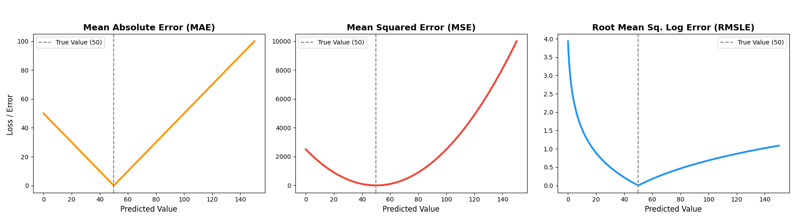
3. The Engine: Gradient Descent
Now that the model knows it is wrong, how does it systematically fix itself? It uses an optimization algorithm called Gradient Descent.
Imagine you are standing at the top of a foggy mountain, blindfolded, and you need to get to the very bottom of the valley (where the Loss is zero). You can't see the whole mountain to plan a route, but you can feel the slope of the ground under your feet. You take a step in the direction that goes down the steepest.

Gradient Descent does exactly this using calculus. It calculates the slope of the error and tweaks the internal Weights and Biases just a tiny bit in the downward direction. It repeats this process thousands of times, taking step after step until the ground levels out—meaning it has reached the bottom of the valley.
Jumps to the Linear Algebra section. Recommended for those who want to see the calculus behind the algorithm!
The Real World: Mini-Batch Stochastic Gradient Descent (SGD)
If you have a dataset with 10 million ocean temperature readings, calculating the true derivative (summing up all 10 million errors for a single step) is computationally brutal. Instead, modern machine learning uses Mini-Batch SGD.
The algorithm randomly grabs a small "batch" of data (e.g., 32 readings), calculates a quick-and-dirty estimate of the slope, and takes a step. It wanders a bit like a drunk hiker, zigzagging slightly, but it computes incredibly fast! However, because this 'drunk' zigzagging is so chaotic, choosing the perfect step size becomes the single most crucial decision in training a model.
The Vocabulary of Training Time:
- Batch Size: The number of samples the model looks at before taking one step (updating weights).
- Iteration (or Step): One single update of the weights based on one batch.
- Epoch: One complete pass through the entire dataset. If you have 1,000 images and a batch size of 100, it takes 10 iterations to complete 1 Epoch.
The Evolution of Optimizers: Controlling the Learning Rate
Gradient Descent is a brilliant concept, but it introduces a massive practical challenge: The Learning Rate \((\alpha)\). If Gradient Descent tells the model which direction to step, the Learning Rate determines exactly how big that step should be.
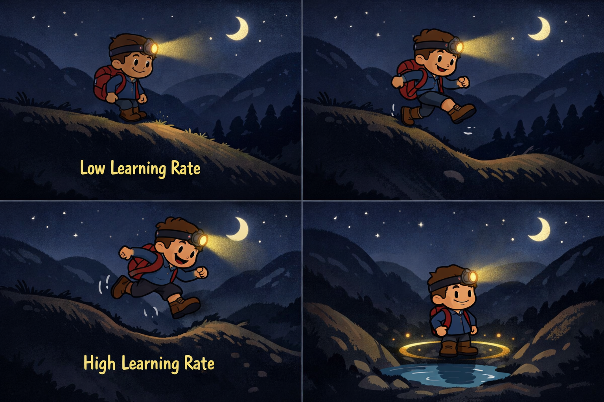
As illustrated by our hiker navigating down the dark mountain:
- If \(\alpha\) is too small (Low Learning Rate): The algorithm takes microscopic, overly cautious baby steps. While the hiker is practically guaranteed not to fall or get lost, reaching the bottom of the valley will take an agonizingly long time and burn through massive amounts of computing power.
- If \(\alpha\) is too large (High Learning Rate): The algorithm takes massive, reckless leaps. The hiker moves fast, but they risk completely overshooting the lowest point of the valley, bouncing up the opposite hill, or landing in a suboptimal ditch. The model's error becomes wildly unstable and fails to converge.
Historically, data scientists had to manually guess the perfect "Goldilocks" step size. To solve this frustrating trial-and-error process, researchers invented Schedules and Optimizers—advanced algorithms built on top of Gradient Descent that intelligently adjust the learning rate on the fly.
While you don't need to memorize the calculus to build AI, looking at the underlying math helps demystify how these algorithms actually think. Let's look at the equations behind the 4 evolutionary stages of optimizers to see how we arrived at the modern champion.
Stage 1: Fixed Learning Rate (The Cruise Control)
In standard Stochastic Gradient Descent (SGD), a single, constant value (like 0.01) is maintained from the first epoch to the very last.
- \(w_{t+1}\) = The new weight
- \(w_t\) = The current weight
- \(\alpha\) = The Learning Rate (a constant scalar, e.g., 0.01)
- \(g_t\) = The gradient (the slope of the error at that exact moment)
Stage 2: Learning Rate Decay (The Planned Braking)
To fix the rigidness of SGD, developers created "Schedules" that deliberately shrink the learning rate over time. It allows the model to take massive steps early on, and tiny, precise steps as it approaches the finish line.
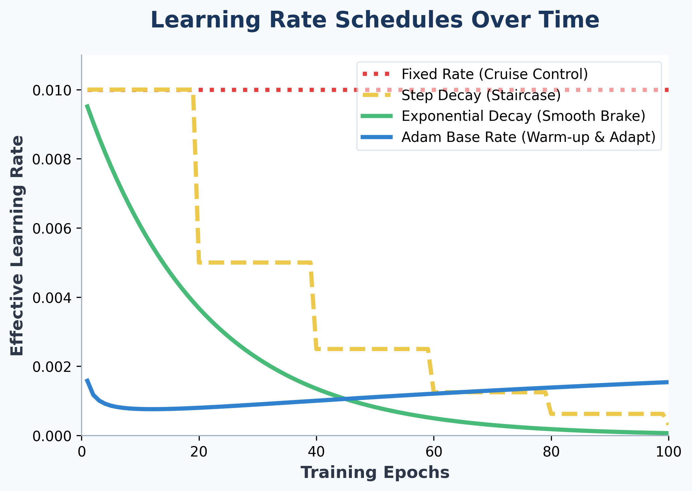
- \(\alpha_t\) = The learning rate at current epoch \(t\)
- \(\alpha_0\) = The starting learning rate
- \(\gamma\) = The drop factor (e.g., 0.5 to cut it in half)
- \(s\) = The step size (e.g., every 10 epochs)
Stage 3: Cyclic Learning Rate (The Rollercoaster)
Instead of strictly slowing down, the learning rate oscillates back and forth between a minimum and maximum limit linearly.
- Why do this? Loss landscapes are full of "fake valleys" (Local Minima). If a model decays its learning rate too soon, it might get permanently stuck in a shallow ditch. A cyclic burst of "high speed" gives the model the sudden momentum to jump out of the ditch and continue exploring for the true, lowest bottom.
Stage 4: Adaptive Optimizers (The Smart Navigators)
This is the bleeding edge of optimization. Instead of having one global learning rate for the whole model, adaptive methods calculate a unique, dynamic learning rate for every single parameter (weight) based on the actual data they are receiving in real-time.
- AdaGrad: Great for sparse data, but it shrinks the learning rate so aggressively that the model often stops learning entirely before reaching the goal.
- RMSprop: Invented to fix AdaGrad's flaw by using a "moving average" to stop the learning rate from decaying to zero too quickly.
- The Champion — Adam (Adaptive Moment Estimation): The ultimate hybrid. It combines the smart pacing of RMSprop with the "rolling boulder" momentum of earlier algorithms.
Adam calculates two running averages for every single weight:
- Momentum (\(m_t\)): The average of past gradients. (Builds up speed if the slope keeps going in the same direction).
- Variance (\(v_t\)): The average of past squared gradients. (Measures how wild and volatile the updates have been).
After a quick bias correction, Adam calculates the new weight using this master formula:
- \(\hat{m}_t\) = Bias-corrected momentum
- \(\hat{v}_t\) = Bias-corrected variance
- \(\epsilon\) = A tiny constant to prevent division by zero (e.g., \(10^{-8}\))
The Verdict: Why Adam Wins
In 95% of modern Deep Learning projects, Adam is the undisputed champion and the default starting point.
A Practical Example: Training an Image Classifier
Imagine you are training a neural network to recognize thousands of different animals.
- If you use a Fixed Rate, you have to guess the perfect speed. If you guess wrong, the model never learns to tell a dog from a cat.
- If you use Step Decay, you have to manually configure exactly which epoch to slow down on. It takes days of trial and error.
- If you use Adam, you simply set the initial learning rate to
0.001and go to sleep. Adam dynamically customizes the learning journey for every single part of the network.
How Adam solves the "Cat vs Dog" problem mathematically:
Look at the denominator in the formula: \(\sqrt{\hat{v}_t}\). This is Adam's secret weapon.
- The "Background Color" (High volatility): These features appear constantly and produce huge, noisy gradients. Because the squared gradients are huge, \(\hat{v}_t\) becomes a very large number. When we divide our learning rate \(\alpha\) by a massive \(\hat{v}_t\), the effective learning rate shrinks dramatically. Adam automatically hits the brakes to prevent chaotic jumping.
- The "Whiskers" (Low volatility): These are rare, subtle features. They produce tiny, infrequent gradients. Because the squared gradients are tiny, \(\hat{v}_t\) is very close to zero. Dividing \(\alpha\) by a tiny number effectively boosts the learning rate for that specific feature. Adam automatically hits the gas so the model doesn't ignore the subtle details!
Explore Other Alternative Optimizers Click to expand ⯆
Gradient Descent (and Adam) is the undisputed king of Deep Learning. But depending on the type of problem, data scientists have a few other fascinating tools in their optimization toolbox.
1. Closed-Form Solutions (Normal Equation)
For simple models like standard Linear Regression, you don't actually need to take "steps" down a mountain at all. Because the math forms a perfect bowl shape, you can use linear algebra to jump directly to the exact bottom in a single calculation.
- Why we don't always use it: It requires computing the inverse of massive matrices. If you have millions of features, doing this math will crash even the world's most powerful supercomputers.
2. Second-Order Methods (Newton’s Method & L-BFGS)
Gradient Descent only calculates the slope. Second-Order methods calculate the slope and the curvature of the mountain, allowing for massive, highly accurate leaps straight toward the bottom.
- Why we don't always use it: Calculating the curvature of a neural network with billions of parameters requires an impossible amount of computer memory.
3. Nature-Inspired Algorithms
Evolutionary & Genetic Algorithms (GA)
Instead of one hiker, you drop 1,000 random hikers across the mountain. You "kill" the ones that are stuck at the top, and allow the successful hikers to "breed" (combine their coordinates) to create a new generation that naturally evolves toward the lowest valley over time.
Particle Swarm Optimization (PSO)
Inspired by flocks of birds. You release a "swarm" of dots onto the mountain. They buzz around, constantly adjusting their flight paths based on the group's shared knowledge until they all swarm the global minimum.
4. The Goldilocks Problem (Overfitting vs. Underfitting)
As the model trains via Gradient Descent and Adam, it constantly pushes its Loss score lower and lower. However, a near-zero training loss does not mean we have built a good model. We have to watch out for two massive traps:

- Underfitting (Too Simple): The model is like a lazy student. It didn't look at the features closely enough and drew a straight, overly simplistic line through highly complex data. It performs terribly on the training data and terribly in the real world.
- Overfitting (Too Complex): The model is like a student who memorized the exact answers to a practice test instead of learning the actual underlying concepts. It connects every single dot perfectly, including the random noise and errors in your sensors. It scores a 100% on the training data, but the second you give it brand new data, it fails completely.
The art of Machine Learning is finding the "Goldilocks Zone"—a model that is complex enough to capture the true underlying physics or patterns, but general enough to handle data it has never seen before.
The "Practice Test" Analogy
Imagine a student preparing for a massive final math exam. The teacher gives them a 100-question practice test.
A good student will study the concepts behind the questions to understand the formulas. But an overfitting student simply memorizes the answer key: "Question 1 is A, Question 2 is C..." They even memorize that question 43 has a typo in the second sentence.
If you give this student the exact same practice test again, they will score a perfect 100%. But the moment they sit down for the actual final exam—where the questions test the same concepts but use slightly different numbers—they fail completely. Their knowledge is utterly rigid.
Why Does Overfitting Happen?
Overfitting is typically the result of an imbalance between the complexity of the model and the quality of the data. The three most common culprits are:
- 1. The Model is Too Complex: If you use a 150-layer Deep Neural Network to predict housing prices based on just square footage and zip code, the model has way too much "brainpower" for a simple task. With nothing else to learn, it uses its massive capacity to draw wild, hyper-specific mathematical curves through every single outlier.
- 2. Not Enough Data: If you only show a computer 5 pictures of cats, and all 5 cats happen to be sitting on orange rugs, a complex model might confidently learn that "orange rugs" are the defining biological feature of a cat. It needs a massive, varied dataset to generalize correctly.
- 3. Training for Too Long: If you let a model train for 10,000 epochs on a small dataset, it will eventually squeeze every last drop of error out by perfectly touching every single training point, destroying its ability to generalize.
The Diagnosis & Antidotes
Because an overfit model achieves near-perfect scores on its training data, it creates a dangerous illusion of success. The only way to diagnose overfitting is to evaluate the model on a separate, hidden "Validation" dataset during training.
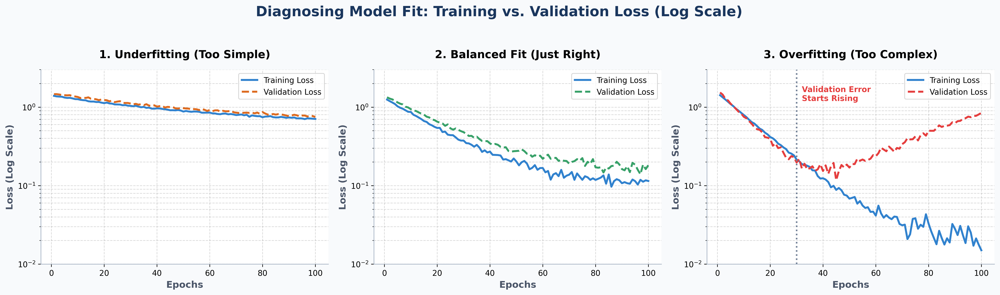
To cure overfitting, data scientists use techniques known as Regularization. These are essentially ways to intentionally handicap the model, forcing it to focus only on the most dominant, reliable patterns:
| Technique | How it works |
|---|---|
| Early Stopping | Monitoring the validation loss closely and halting the training process the very second the error starts to hook upwards. |
| Dropout | Randomly turning off a percentage of neurons during training so the network cannot rely on highly specific, brittle, memorized pathways. |
| Data Augmentation | Artificially expanding the dataset by flipping, rotating, or adding slight noise to the training data. |
| L1/L2 Penalties | Adding a mathematical tax directly to the Loss Function that violently punishes the model for allowing its Weights to become too large or complex. |
A model is only as good as its performance on data it has never seen before.
Test Your Knowledge
Let's make sure your brain didn't overfit to this tutorial. Can you apply what you just read?
Q1: If my model achieves a perfect Loss score of 0.0001 on my dataset, does that mean it's ready for the real world?
Q2: Why don't we just use the absolute smallest Learning Rate possible to guarantee we safely reach the bottom of the error mountain?
5. Data Preparation (Before the Magic Happens)
Sometimes when a model absolutely refuses to learn, things get…frustrated. After the 47th “final” retraining, researchers slowly lean back, stare at the screen, and start questioning their life choices. The model keeps predicting nonsense, the loss curve is doing modern art, and suddenly the keyboard looks like it personally caused the problem. At this stage, dramatic sighs are released, the machine is declared completely unhinged, and there's a very real risk of someone whispering, “one more epoch… and I swear…”
But before you blame the algorithm or throw your computer out the window, take a step back. More often than not, it isn't a machine problem at all—it is a data problem.

There is a famous saying in computer science: "Garbage In, Garbage Out." You can build the most advanced, mathematically perfect Neural Network in the world, but if you feed it messy, broken data, it will give you messy, broken predictions. Even after 1,000 epochs of training, the neural network will not be able to learn the true physical patterns if the underlying data is flawed.
Too often, beginners (and even experienced researchers!) obsess over tweaking algorithmic parameters without giving a second thought to their dataset. They just want to see the "magic" happen. But the magic will not happen if the data is not good enough. If you start with a shaky foundation, no amount of fancy calculus will save you.
Why does this happen? Because machines do not have human common sense. A machine's only goal is to find a mathematical pattern. If your dataset is corrupted, noisy, or missing values, the machine will dutifully attempt to find a pattern in that corruption. It is exactly like a student who memorizes a textbook full of typos, confidently writing down the wrong answers on the final exam because they assumed every misprint was a fundamental rule of the universe (see Figure 5.2).

This is why the human researcher must understand the data better than the machine does. Before we can ever feed our data into the Gradient Descent engine, it must go through a rigorous pipeline: Cleaning, Encoding, Balancing, Transforming, Scaling, and Splitting.
Step 1: Categorical Encoding (Translating Words to Math)
Neural Networks are, at their core, giant math equations. They only speak numbers. If you feed a Neural Network a column that says City: "New York", the mathematical engine will instantly crash because you cannot multiply "New York" by a Weight. We must translate words into math:
- Label Encoding (For "Ranked" Words): Use this when your text has a natural, logical order. For a
Sizecolumn (Small, Medium, Large), you assign an integer: Small = 1, Medium = 2, Large = 3. The AI understands that 3 is mathematically and logically larger than 1. - One-Hot Encoding (For "Equal" Words): Use this when text has no mathematical order (like Colors: Red, Green, Blue). If you assign them 1, 2, and 3, the AI will incorrectly assume Blue is "3 times larger" than Red, ruining the model! Instead, we create a new binary column for every category (e.g.,
Is_Red: 1 or 0,Is_Green: 1 or 0).
Step 2: Handling Class Imbalance (The Accuracy Trap)
The Problem: If one class completely dominates the dataset, the Neural Network will naturally become biased toward it. Imagine you are building an AI to detect manufacturing defects. 99% of your products are perfect, and 1% are defective. If you feed this directly into a model, the Gradient Descent engine looks for the easiest mathematical path to a high score. It quickly realizes: "If I just guess 'Perfect' every single time, I get a 99% Accuracy score!" The model looks like a genius on paper, but completely fails its actual job in the real world.

Early Detection: The Confusion Matrix
Accuracy looks nice, but with imbalanced data it can be seriously misleading. So we ditch it and bring in the confusion matrix, which forces every prediction into one of four honest categories instead of giving one overly optimistic number:
- True Positives (TP): Correctly predicted the minority target.
- True Negatives (TN): Correctly predicted the majority background.
- False Positives (FP): Predicted minority, but it was actually majority (Type I Error / False Alarm).
- False Negatives (FN): Predicted majority, but it was actually minority (Type II Error / The Miss).

The Truth-Tellers: Precision, Recall, and F1-Score
Standard accuracy tells you how often the model is right, but it doesn't tell you how it is failing. To solve the accuracy trap, we use three specialized metrics that act as the "truth-tellers" of machine learning:
1. Precision (Quality): This measures how reliable the model is when it predicts the minority class.
"Of all the items I flagged as defective, how many actually were?"
Precision = TP / (TP + FP)
Importance: High precision is vital when a "False Alarm" is expensive (e.g., incorrectly marking a legitimate bank transaction as fraud and freezing a customer's card).
2. Recall (Quantity): Also called Sensitivity, this measures the model’s ability to find all the minority cases.
"Of all the actual defects in the factory, how many did I successfully catch?"
Recall = TP / (TP + FN)
Importance: High recall is crucial when a "Miss" is dangerous (e.g., a medical AI failing to detect a tumor).
3. F1-Score (The Balance): Often, Precision and Recall are in a "tug-of-war." If you try to catch every defect (High Recall), you might start flagging good products by mistake (Low Precision). The F1-Score is the harmonic mean that forces both numbers to be high.
F1 = 2 * ( (Precision * Recall) / (Precision + Recall) )
Importance: This is the "Gold Standard" for imbalanced data. If a model has 99% accuracy but an F1-Score of 0, you know the model is just guessing and hasn't actually learned the pattern.
The Data Solution: To prevent these biased predictions, we must artificially balance the scales before training:
- Undersampling: Randomly deleting thousands of the "Normal" rows until you have an equal 50/50 split. (Fast, but wastes good data).
- Oversampling: Randomly duplicating the minority "Defective" rows until they match the count of the majority class.
- SMOTE (Synthetic Minority Over-sampling Technique): The industry standard. Instead of just copying existing data, SMOTE uses nearest-neighbors mathematics to generate brand new, realistic synthetic data points for the minority class.
Step 3: Data Cleaning (The Checklist)
Real-world scientific data is never perfect. Sensors break, transmission signals drop, and humans make typos. Furthermore, datasets often contain duplicate or linearly dependent columns which feed misleading insights to the model. To prevent our model from learning the "wrong physics," we must run our data through a rigorous checklist:
-
1. Check for Duplicate Rows: Sensors can stutter and record the exact same event twice. We must deduplicate the dataset to prevent the model from artificially inflating the importance of a single repeated event.

Figure_5.5: Duplicate Rows. These rows provide redundant information and should be removed to improve model performance. -
2. Remove Linearly Dependent Columns: Sometimes two columns are perfectly correlated or mathematically dependent (e.g., providing temperature in both Celsius and Fahrenheit). You must ignore dependent columns using Dimensional Analysis to reduce redundant noise.

Figure_5.6: Linearly Dependent Columns. These columns provide redundant information and should be removed to improve model performance. - 3. Assess Missing Values (NaNs): Before fixing missing values, measure the damage. If a column is missing 2% of its data, it is a minor issue you can impute (fill in). If it is missing 80%, or if it has absolutely no predictive value (like a "Sensor Serial Number"), drop the column entirely. It is just noise.
-
4. Detect Sensor/Human Outliers: Sometimes a sensor glitches and records a wave height of 500 meters. Detect those outliers with Box Plots. Visualizing your data helps you identify points that fall far outside the Interquartile Range (IQR). If you don't remove or cap these impossible outliers, the model will severely distort its Weights trying to account for them.
sns.boxplot(x=df['Data'])
Figure_5.7: Spotting outliers in the data. Source: Online Learning College -
5. Data Formatting: Ensure your data speaks the right language. Dates must be formatted as proper
DateTimeobjects (not raw text), strings should be converted to categories, and integers shouldn't be accidentally saved as text strings. -
6. Handling & Masking NaNs: Real-time data frequently contains `NaN` (Not a Number) values. These may come from sensor glitches or physical boundaries. If it is a glitch, you can drop the row or interpolate the missing number. However, sometimes NaNs represent physical realities. For example, if we are mapping ocean currents around an island, the landmass will naturally return a `NaN` value for current. In that case, we mathematically mask the land.
mask = np.where(np.isnan(data), 0, 1)
Figure_5.8: Ocean and Land Masking. The grey area represents masked land (NaNs), while the colored areas represent valid ocean current data.
Step 4: Data Transformation
Sometimes, data is naturally scattered across massive ranges. Most of your data might sit between 0 and 1, but a few critical points might shoot up to 1,000. If the data is highly skewed, we apply mathematical transformations to reshape its distribution into something the model can digest more easily.
For example, applying a Log Transformation can take a heavily right-skewed dataset (where most values are small but a few are massive) and pull it into a clean, "Normal" bell curve. The choice of transformation (Log, Square Root, Box-Cox) depends entirely on the specific shape and characteristics of your dataset.

Step 5: Feature Scaling
This is arguably the most critical mathematical step before training. Machine learning models look at raw numbers; they do not understand units of measurement. We need to keep every feature on a similar mathematical scale so the model treats them equally.
Suppose you are predicting ocean currents based on two features: Atmospheric Pressure (measured in Pascals, around 101,325) and Wave Height (measured in meters, around 2.5). Because 101,325 is massively larger than 2.5, the Gradient Descent algorithm will naturally assume that Pressure is millions of times more important than Wave Height, simply because the number is bigger!

To fix this feature dominance, we "squish" all our features down to a similar scale. Here are the five main ways to do this:
1. Absolute Maximum Scaling
This method simply divides every value by the maximum absolute value in that column. It preserves the data's exact original shape and sparsity but forces everything between -1 and 1.
2. Min-Max Scaling
This scales all your data to fit perfectly between 0 and 1. It is heavily used in image processing where pixel values have strict boundaries.
3. Normalization (Vector Normalization)
Instead of scaling columns (features), this scales rows (individual samples) so that they have a length (norm) of 1. This is highly useful in text classification or clustering algorithms where the direction of the data matters more than the magnitude.
4. Standardization (Z-Score)
This centers your data around zero, using the mean and standard deviation. This is usually the preferred method for Deep Learning algorithms, as it handles minor outliers much better than Min-Max.

5. Robust Scaling
If your data is plagued by extreme outliers that you cannot delete, Standardization will fail because outliers severely skew the Mean. Robust Scaling fixes this by using the Median and the Interquartile Range (IQR), ignoring the extremes entirely.
Step 6: Minimizing and Augmenting Data
Sometimes we have too much data, or the data is presented in an orientation that makes it difficult for the model to understand. We can manipulate our dataset's complexity using mathematical operations:
- Dimensionality Reduction (Rotation): Using techniques like Principal Component Analysis (PCA), we can mathematically "rotate" our entire dataset to look at it from an angle where the core patterns are most obvious. By finding this optimal viewing angle, we can often drop dozens of less important columns, shrinking the dataset's size while keeping 99% of the valuable information intact.
- Data Augmentation (Translation & Rotation): In fields like Computer Vision, if we don't have enough training data, we can artificially create more by taking our existing images and applying random rotations, flips, or translations. This forces the model to learn that a dog is still a dog, even if the picture is upside down!
Step 7: The Split (Train, Validation, Test)
If you train your model on all the data you possess, how will you know if it actually learned the underlying physics, or if it simply memorized the dataset? To prove that your model can generalize to new, unseen data, you must hide a portion of your dataset from the model during training. This is the only way to get an honest, unbiased measure of its real-world performance.
The Pre-Split Shuffle (Mixing the Deck): Before we slice the data, we must Randomly Shuffle it. Datasets are often recorded sequentially or grouped by category. If you split un-shuffled data 80/20, your Training Set might contain only one specific category, causing your model to fail spectacularly on the Test Set. Shuffling guarantees that both sets receive a fair, randomized mix of scenarios.
To prove our model works, we take our pristine, balanced, encoded, and shuffled dataset and chop it into three separate blocks:
- Training Set (Usually 70-80%): This is the textbook. The model uses this bulk of data to calculate Loss, perform Gradient Descent, and update its Weights.
- Validation Set (Usually 10-15%): This is the practice quiz. While the model is training, we periodically ask it to predict the Validation data. The model is not allowed to learn from this data; it only uses it to monitor if it is starting to Overfit.
- Test Set (Usually 10-15%): This is the final exam. Once the model is completely trained and finalized, we test it one single time on this completely unseen data. The score it achieves here is the true, final measure of its real-world ability.
�� The Golden Rule (Beware the "Peeking Trap")
There is one critical sequencing rule you must follow when putting all these steps together: You MUST split your data into Train and Test sets BEFORE you do Feature Scaling or Mean Imputation.
If you fill Missing Values with the column's Average before splitting, you just used numbers from the Test Data to calculate that average! The Training Data has officially "peeked" into the future.
Always Split First, then Fit your scalers strictly on the Training Set alone. Furthermore, if you are dealing with sequential Time-Series data (like predicting ocean tides over time), you cannot randomly shuffle your data before splitting it, otherwise you will leak future temporal data into the past!
A common trap even experienced researchers fall into is testing their model on the same data it was trained on just to show off a 99% accuracy rate. This is cheating! Machine learning is not about forcing a 99% score; it is about building robust models that survive the chaos of new data.
Questions that were not in the training data...
Q1: Should I split first or normalize first? When should I perform data transformation?
Q2: If I have different datasets with different ranges, how will I normalize them?
Q3: Which one is the "best" normalization technique?
Q4: How much data do I actually need for Deep Learning?
6. Introduction to Supervised Deep Learning
Supervised Deep Learning is the engine behind the most advanced AI systems today. At its core, it is a subfield of Machine Learning that uses Artificial Neural Networks (ANNs) to learn from labeled data. While traditional Machine Learning often requires manual feature engineering, Deep Learning models "deepen" their understanding by automatically extracting hierarchical features through multiple layers of abstraction.
Why Supervised Deep Learning? Supervised Learning remains the "bread and butter" of the industry. Most of the ML models uses supervised learning. If you have a data set with clear labels and you want to make a prediction with precision and accuntability , supervised learning is the way to go. Supervised learning is high precision and Reliability, clear Performance, Predictability.
Famous Supervised Models
Algorithms generally fall into two categories: Traditional Machine Learning (great for structured, tabular data) and Deep Learning (designed for complex, unstructured or spatial data).
1. Linear & Logistic Regression (The Foundations)
Linear Regression predicts continuous values (like temperature or price) by fitting a straight line through data points.
Equation: \(\hat{y} = w_1x_1 + w_2x_2 + \dots + w_nx_n + b\)
Logistic Regression is used for binary classification (Yes/No). It wraps the linear equation in a Sigmoid Function to squash the output into a probability between 0 and 1.
Equation: \(\hat{y} = \sigma(w \cdot x + b)\) where \(\sigma(z) = \frac{1}{1 + e^{-z}}\)
2. Support Vector Machines (SVM)
Imagine plotting your data points on a graph. An SVM tries to draw a "hyperplane" between different classes. Its mathematical goal is to maximize the margin—the empty space between the closest data points (the support vectors) of different categories.
3. Decision Trees & Random Forests
A Decision Tree splits data based on a series of feature-based questions (e.g., "Is value > 50?"). A Random Forest is an ensemble method that builds hundreds of these trees using random subsets of data and averages their predictions to prevent the model from memorizing the training data (overfitting).
4. Deep Neural Networks (MLPs & CNNs)
Neural networks stack thousands of the foundational \(w \cdot x + b\) equations into hierarchical layers. Each node calculates its output using an activation function:
$$a^{(L)} = \sigma(W^{(L)} a^{(L-1)} + b^{(L)})$$
- Multi-Layer Perceptrons (MLPs): Classic feedforward networks excellent at mapping highly non-linear relationships.
- Convolutional Neural Networks (CNNs) & U-Nets: Instead of looking point-by-point, these use "filters" to scan spatial data. Architectures like the U-Net are the industry standard for tasks requiring spatial context, such as image segmentation or grid-based super-resolution.
1. The Architecture of a Neural Network
A typical Deep Learning model is composed of three primary types of layers:
- Input Layer: Where raw data (pixels, text, or numbers) enters the network.
- Hidden Layers: These are the "thinking" layers. Each layer captures a different level of detail. For an image, early layers might detect edges, while deeper layers recognize complex shapes like eyes or wheels.
- Output Layer: The final destination that provides the prediction—either a category (Classification) or a specific value (Regression).
Deep Dive: What exactly are Weights and Biases?
You have seen the equation \(y = w \cdot x + b\) multiple times now. But what do these letters actually represent in the real world? Think of a neural network as a massive control board, and the weights and biases are the dials and switches the model adjusts to tune into the correct answer.

Weights (\(w\)): The "Importance" Dials
A weight dictates the strength of the connection between an input and the output. If an input feature is highly relevant to the final prediction, the model will learn to assign it a large weight (either positive or negative). If a feature is useless noise, the network will shrink its weight down to zero, effectively turning that input "off."
Biases (\(b\)): The "Baseline" Anchors
A bias is an independent constant added to the calculation. It represents the baseline state or assumption of the output when all inputs are exactly zero. Without a bias, every mathematical prediction would be rigidly forced to pass through the absolute zero point \((0,0)\), which limits the model's flexibility.
A Real-World Example: Predicting Wave Heights
Imagine you are building a model to predict the height of ocean waves or a storm surge (\(y\)) based on environmental data.
- Input 1 (\(x_1\)): Wind Speed. This is critical. The model will assign a large positive Weight (\(w_1\)) to this input because higher wind speeds dramatically increase wave heights.
- Input 2 (\(x_2\)): Cloud Cover. This has almost nothing to do with hydrodynamic wave evolution. The model will eventually learn to assign a Weight (\(w_2\)) near 0, ignoring it.
- The Bias (\(b\)): Even on a perfectly calm day with absolutely zero wind (\(x_1 = 0\)), the ocean is never perfectly flat. There is always a baseline ambient swell. The Bias represents this natural, underlying wave height that exists independently of the immediate wind inputs.
In a Deep Learning model like a U-Net or a Multi-Layer Perceptron, there aren't just two weights and one bias—there are millions or even billions of them. Training the network is simply the mathematical process of finding the perfect configuration for all those tiny dials.
How the Model "Learns": The Optimization Loop
A Deep Learning model doesn't just memorize data; it optimizes itself. The learning process is an iterative cycle (repeated over many epochs) where the model makes a guess, measures how wrong it is, and updates its internal parameters (weights and biases) to do better next time.
Step 1: Forward Propagation (The Guess)
The model takes the input data \((x)\), passes it through its layers of weights \((W)\) and biases \((b)\), applies an activation function \(\sigma\), and generates a prediction \(\hat{y}\). At the very beginning of training, these weights are entirely random, so the first guess is usually terrible!
Step 2: Loss Calculation (The Reality Check)
Once the model makes its prediction \(\hat{y}\), it compares it to the actual ground-truth label \((y)\). A Loss Function mathematically calculates the "distance" or error between the guess and the truth. For example, in regression tasks, we often use Mean Squared Error (MSE):
Step 3: Backpropagation & Gradient Descent (The Correction)
This is the true "learning" phase. The model works backward from the output to the input (Backpropagation), using calculus (the Chain Rule) to find the gradient—which tells us exactly how much each individual weight contributed to the overall error.
Then, an optimizer (like Stochastic Gradient Descent or Adam) adjusts the weights in the opposite direction of the error. The size of this adjustment is controlled by the Learning Rate (\(\alpha\)):
Q1: How does the model know what numbers to use for the weights and biases at the very beginning
7. Linear Regression: The "Hello World" of Supervised Learning
Linear Regression is universally considered the basic classifier of Machine Learning. Before diving into complex deep learning architectures, every data scientist starts here. At its core, it is a statistical method used to model the relationship between a dependent variable (\(y\), the outcome you want to predict) and one or more independent variables (\(x\), the features or data points you already have).
Furthermore, mastering this algorithm is non-negotiable if you want to truly understand Deep Learning. A single artificial neuron in a massive neural network is essentially just a linear regression equation wrapped in an activation function. By understanding how a simple line is mathematically fitted to data today, you are learning the exact foundational mechanics that power the world's most advanced predictive models.
1. The Mathematical Equation
We define our model as a activation function, denoted as \(h_{\theta}(x)\). This function maps input features to a predicted output through a weighted sum. In a formal context, we express this using Vector Dot Products, which is how modern machine learning libraries (like PyTorch or TensorFlow) actually perform these calculations. If we have a feature vector \(\vec{x}\) and a parameter vector \(\vec{w}\), the prediction is
What is Linear Regression?
At its most fundamental level, Linear Regression is a statistical method used to predict a continuous numerical value (the dependent variable) based on one or more input factors (the independent variables).
It is termed "linear" because it assumes a proportional, straight-line relationship between your inputs and your output.In simple linear regression, the relationship is expressed through the equation:
$$y = \beta_0 + \beta_1 x$$
- \(y\): The target or predicted value
- \(x\): The input feature or predictor.
- \(\beta_1\): The y-intercept, representing the value of \(y\) when \(x\) is zero
- \(\beta_0\): The slope, representing the change in \(y\) for every unit change in \(x\)

In multivariate linear regression, we represent the relationship between multiple independent variables and a single dependent variable using linear algebra.
For a dataset with \(n\) observations and \(k\) features, the components are defined as:
| Term | Name | Dimension | Description |
|---|---|---|---|
| \(\mathbf{y}\) | Target Vector | \(n \times 1\) | The observed values we want to predict. |
| \(\mathbf{X}\) | Design Matrix | \(n \times (k+1)\) | The input data. The first column is 1s for the intercept. |
| \(\boldsymbol{\beta}\) | Parameter Vector | \((k+1) \times 1\) | The weights (coefficients) we need to estimate. |
| \(\boldsymbol{\epsilon}\) | Error Vector | \(n \times 1\) | The difference between predicted and actual values. |
To find the optimal coefficients \(\hat{\boldsymbol{\beta}}\) that minimize the error, we solve:

1. The Core Concept: The "Line of Best Fit"
Imagine a scatter plot representing house prices based on square footage. The data points are scattered, but they follow a clear upward trend. Linear Regression mathematically calculates the specific line that minimizes the total distance (error) between itself and every individual data point in the set.

2. Geometric Interpretation
The "shape" of the model changes depending on the complexity of the data you provide:
- Simple Linear Regression (2D): With only one input (\(x\)), the model is a straight line on a standard graph.
- Multiple Linear Regression (3D): With two inputs, the model becomes a flat plane cutting through a cloud of data points.
- Higher Dimensions: Beyond two inputs, the model is referred to as a hyperplane. While we cannot visualize it, the math remains identical.
3. From Identity to Non-Linear Mapping
Linear regression can be viewed as the simplest form of a neural network. While a traditional linear model utilizes an identity activation function where the output is a direct linear combination of the inputs, a Neural Network introduces non-linearity by wrapping that combination in a specific function \(f\), such as \(\tanh\) or Sigmoid. Mathematically, Linear Regression is a special case of the neuron model \(y = f(Wx + b)\) where \(f(z) = z\).
The Bridge: Terminology Swap: we transition from Statistics to Deep Learning, the math remains consistent while the labels shift:
- Coefficients (\(\beta\)) \(\rightarrow\) Weights (\(w\))
- Intercept (\(\beta_0\)) \(\rightarrow\) Bias (\(b\))
- Normal Equation \(\rightarrow\) Backpropagation / Gradient Descent
- Standard Error \(\rightarrow\) Loss Function
4. The Objective: Minimizing the Residuals
A Linear Regression model doesn't just draw any line; it tries to find the "Line of Best Fit." It does this by measuring the distance between the actual data points and the predicted points on the line. These distances are called Residuals (or Errors).
Linear Regression isn't just a line; it is a system of vectorized operations designed to map inputs to outputs with minimal error. Below is the formal derivation of how the model defines itself and how it learns.
5. The Road Map

Let's Do the Math: Step-by-Step Vector Problems
Problem 1:
To truly understand the mechanics of gradient descent, we must look "under the hood" and manually calculate the error for a small dataset. Consider a scenario in coastal oceanography where we want to predict wave height based on wind speed.
Wind speed in m/s is \((2,3,5)\) and wave height is \((1,2,4)\). Calculate the weight and bias for the data.
Suppose we have recorded three data points. We can represent our independent variable (wind speed in m/s) and our dependent variable (wave height in m) as vectors:
(Wind Speed) $$\vec{x} = \begin{bmatrix} 2 \\ 3 \\ 5 \end{bmatrix}$$
(Actual Height) $$\vec{y} = \begin{bmatrix} 1 \\ 2 \\ 4 \end{bmatrix}$$
Our objective is to calculate the optimal weight (\(w\)) and bias (\(b\)) to map \(\vec{x}\) to \(\vec{y}\). For this exercise, we define our stopping condition, or error tolerance, as \(\epsilon = 0.05\).
Iteration 1: The Initial Guess
Before training begins, the model initializes with random parameters. Let us assume an initial weight of \(w = 0.5\) and a bias of \(b = -0.5\). We calculate our predicted wave heights (\(\hat{\vec{y}}\)) using the linear formula \(\hat{\vec{y}} = \vec{w}\vec{x} + \vec{b}\):
Next, we calculate the Mean Squared Error (MSE) to quantify the inaccuracy of this initial guess:
$$MSE = \frac{(1 - 0.5)^2 + (2 - 1.0)^2 + (4 - 2.0)^2}{3} = \frac{5.25}{3} = 1.750$$Because our current error (\(1.750\)) is significantly greater than our tolerance (\(\epsilon = 0.05\)), the model must update its parameters. We calculate the gradients using the following partial derivatives:
- Gradient for weight (\(w\)): \(\frac{\partial MSE}{\partial w} = -\frac{2}{3} [14] \approx -9.333\)
- Gradient for bias (\(b\)): \(\frac{\partial MSE}{\partial b} = -\frac{2}{3} [3.5] \approx -2.333\)
We apply a Learning Rate (\(\alpha\)) of 0.05 to update the parameters:
\(b_{new} = -0.5 - (0.05 \cdot -2.333) = \mathbf{-0.383}\)
Iteration 2: The Downhill Step
Using our updated parameters, we calculate new predictions:
$$\hat{\vec{y}} = \begin{bmatrix} 0.967 \\ 0.967 \\ 0.967 \end{bmatrix} \begin{bmatrix} 2 \\ 3 \\ 5 \end{bmatrix} + \begin{bmatrix} -0.383 \\ -0.383 \\ -0.383 \end{bmatrix} = \begin{bmatrix} 1.551 \\ 2.518 \\ 4.452 \end{bmatrix}$$Recalculating the MSE: \(MSE \approx 0.259\). The error has dropped drastically, but as \(0.259 > 0.05\), we perform another update:
\(b_{new} = -0.383 - (0.05 \cdot 1.014) = \mathbf{-0.434}\)
Iteration 3: Refining the Fit
Repeating the process for the third time:
$$\hat{\vec{y}} = \begin{bmatrix} 1.172 \\ 1.975 \\ 3.581 \end{bmatrix}, \quad MSE \approx 0.069$$The error is approaching our threshold. Note that the weight gradient has become negative (-1.217), indicating the algorithm is self-correcting its path.
\(b_{new} = -0.434 - (0.05 \cdot -0.181) = \mathbf{-0.425}\)
Iteration 4: Reaching Convergence
With our Iteration 3 parameters, we arrive at our final calculation:
$$\hat{\vec{y}} = \begin{bmatrix} 1.303 \\ 2.167 \\ 3.895 \end{bmatrix}$$Final Mean Squared Error:
Conclusion: Because the \(MSE < \epsilon\) (\(0.044 < 0.05\)), the model has successfully learned to fit the data within our specified error tolerance. We conclude the training phase here, having achieved an optimal linear fit.
Problem 2: Non-Linear Convergence with Heterogeneous Weights
Problem Statement:
A single neuron processes two inputs \((x_1 = 0.5, x_2 = -0.2)\) with initial heterogeneous weights \((w_1 = 0.8, w_2 = 0.4)\) and a bias \((b = -0.1)\). The target output is \(y = 0.5\). Using the Tanh activation function and a Learning Rate \((\alpha)\) of 1.0, perform the necessary iterations to reach an error tolerance of \(\epsilon = 0.05\).
View Complete Step-by-Step Solution
Phase 1: Derivative Derivation
To update the weights, we use Gradient Descent. The derivative of the Squared Error with respect to a weight \(w_i\) using the chain rule is:
\(\frac{\partial E}{\partial w_i} = \frac{\partial E}{\partial \hat{y}} \cdot \frac{\partial \hat{y}}{\partial z} \cdot \frac{\partial z}{\partial w_i}\)
- \(\frac{\partial E}{\partial \hat{y}} = -2(y - \hat{y})\) (Error Gradient)
- \(\frac{\partial \hat{y}}{\partial z} = (1 - \tanh^2(z))\) (Tanh Derivative)
- \(\frac{\partial z}{\partial w_i} = x_i\) (Input Gradient)
Iteration 1: Initial State
\(z = (0.5 \cdot 0.8) + (-0.2 \cdot 0.4) + (-0.1) = 0.22\)
\(\hat{y} = \tanh(0.22) = \mathbf{0.2165}\)
\(MSE = (0.5 - 0.2165)^2 = \mathbf{0.0804}\)
Since \(0.0804 > 0.05\), we calculate the update signal (\(\delta\)):
\(w_{1(new)} = 0.8 - (1.0 \cdot \delta \cdot 0.5) = \mathbf{1.070}\)
\(w_{2(new)} = 0.4 - (1.0 \cdot \delta \cdot -0.2) = \mathbf{0.292}\)
\(b_{(new)} = -0.1 - (1.0 \cdot \delta) = \mathbf{0.440}\)
Iteration 2: Secondary Adjustment
\(z = (0.5 \cdot 1.070) + (-0.2 \cdot 0.292) + 0.440 = 0.9166\)
\(\hat{y} = \tanh(0.9166) = \mathbf{0.724}\)
\(MSE = (0.5 - 0.724)^2 = \mathbf{0.0502}\)
The error is effectively at the threshold, but technically \(0.0502 > 0.05\). We perform one final update:
\(w_{1(new)} = 1.070 - (1.0 \cdot 0.213 \cdot 0.5) = \mathbf{0.9635}\)
\(w_{2(new)} = 0.292 - (1.0 \cdot 0.213 \cdot -0.2) = \mathbf{0.3346}\)
\(b_{(new)} = 0.440 - (1.0 \cdot 0.213) = \mathbf{0.227}\)
Iteration 3: Convergence
\(z = (0.5 \cdot 0.9635) + (-0.2 \cdot 0.3346) + 0.227 \approx 0.6418\)
\(\hat{y} = \tanh(0.6418) = \mathbf{0.566}\)
Final MSE: \( (0.5 - 0.566)^2 = \mathbf{0.0044} \)
Conclusion: The error (\(0.0044\)) is now well below the tolerance (\(\epsilon = 0.05\)). The model has converged.
Loss function of doubt is increasing.. Probable question forming.
Q1: The Vanishing Gradient: What happens at the extremes?
Q2: Learning Rate Sensitivity: When is \(\alpha\) too high?
Q3: In real-world data where one input might be "Income" (thousands) and another is "Age" (tens), how do we prevent the model from ignoring the "Age" variable simply because its smaller numbers produce smaller gradients?
8. Multi-Layer Perceptrons (MLPs) & Backpropagation
Perceptron is one of the most basic components used in neural networks and is inspired by the way biological neurons transmit signals in the human brain. Its primary purpose is to perform binary classification, meaning it separates input data into one of two possible groups. In simple terms, a perceptron acts like a decision unit that evaluates several input values. Each input is assigned a certain importance, called a weight, and these weighted values are combined. If the resulting value exceeds a predefined threshold (activation level), the perceptron produces one outcome; otherwise, it produces the alternative outcome. This process allows it to make straightforward two-class decisions, similar to answering a basic “yes” or “no” question.
The "Should I Hit the Snooze Button?" Analogy ??⏰

To understand how a perceptron works, imagine the familiar morning struggle with your alarm clock. The alarm rings, and your brain must decide whether to bravely get out of bed or heroically smash the snooze button and enjoy a few more minutes of sleep. This decision isn’t random—it depends on several factors working together.
You might think about 1. how many hours you slept the previous night, 2.how important your first meeting or class is, 3. how incredibly cozy your blanket feels, and 4.how painfully cold the room outside the blanket seems. Naturally, not all of these factors influence your decision equally. The comfort of your blanket might carry a huge influence, while the room temperature might only play a small role. The importance of your morning responsibilities might also strongly push you toward getting up.
Your brain essentially weighs each of these factors based on how important they are, combines their influence, and then compares the result to an internal threshold. If the final motivation level crosses that threshold, you drag yourself out of bed. If it doesn’t, the snooze button wins and you drift back into dreamland.
This is exactly how a perceptron works in machine learning. It takes multiple inputs, assigns different weights to them, adds them together, and checks whether the result crosses a certain threshold. Based on that comparison, it makes a simple yes-or-no decision. In other words, your brain in the morning is basically running a biological perceptron—one that often gives very high weight to blanket warmth.
1. Types of Perceptrons
Perceptrons are Single layer and multi layer.
The Architecture: From Single Neuron to Deep Learning

Figure_8.2: Single-Input Neuron
Source: Neural Network Design

Figure_8.3: Multiple-Input Neuron
Source: Neural Network Design
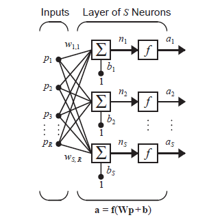
Figure_8.4: Layer of Neurons (Multiple Outputs)
Source: Neural Network Design
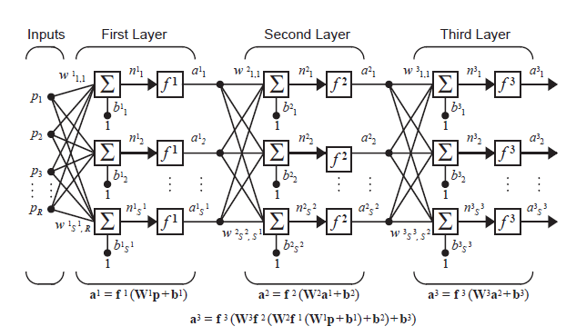
Figure_8.5: Multi-Layer Perceptron (Deep Neural Network)
Source: Neural Network Design
What are these? (Expand for explanations & math) Click to expand ⯆
The architecture of a neural network scales up dramatically depending on the complexity of the task. Let's trace the evolution of these diagrams, starting from a single biological-inspired unit all the way up to a Deep Neural Network.
A. The Single-Input Neuron
At its most basic level, a neuron takes a single piece of data \((p)\), multiplies it by a weight \((w)\), adds a baseline bias \((b)\), and passes the result through an activation function \((f)\) to get an output \((a)\).
B. The Multiple-Input Neuron
In the real world, we rarely make predictions based on just one variable. If we want to predict ocean waves, we need wind speed, pressure, and temperature. Instead of a single number, the input and weight become Vectors (lists of numbers).
Note: The bold \(\mathbf{W}\) and \(\mathbf{p}\) indicate that we are now doing linear algebra (dot products of vectors) to sum up all the different features.
C. A Layer of Neurons
Sometimes we want to predict more than one thing at a time (e.g., predicting both wave height and wave frequency simultaneously). To do this, we copy and paste our multiple-input neuron to create a Layer.
Here, our Weight vector upgrades into a massive Weight Matrix \((\mathbf{W})\), because every single neuron has its own unique set of weights for the incoming data.
D. The Multi-Layer Perceptron (Deep Learning)
A single layer of neurons can only solve simple, linear problems. To solve highly non-linear real-world problems, we stack multiple layers back-to-back. The output (\(\mathbf{a}^1\)) of the first layer becomes the direct input for the second layer, and so on. The layers sandwiched in the middle are known as Hidden Layers.
The Nested Mathematics
Because the output of one layer is fed directly into the next, the final equation becomes nested. For the 3-layer network shown above, the final output \((\mathbf{a}^3)\) is calculated as:
When Gradient Descent optimizes a network like this, it uses an algorithm called Backpropagation to untangle this nested formula, figuring out exactly how to adjust the weights in layer 1 \((\mathbf{W}^1)\) based on the error measured at the very end.
Single-Layer Perceptron: connects input and out put with an activation function. It is most fundamental one. Single layer perceptrons includes binary classification like filtering spam, as a final layer of Deep Learning models, fundamental educational tool.
As we discovered earlier, a Single-Layer Perceptron hits a brick wall the moment data is no longer perfectly separated by a straight line. By stacking multiple layers of neurons and introducing non-linear activation functions (like ReLU or Tanh), the Multi-Layer Perceptron (MLP) overcomes this limitation entirely.
An MLP consists of an input layer, one or more "hidden" layers, and an output layer. The math flows forward layer by layer. For a simple network with one hidden layer, the equations are:
The Forward Pass
Layer 1 (Hidden Layer): Calculate the linear weights, then apply an activation function (like ReLU, where \(f(x) = \max(0, x)\)).
Layer 2 (Output Layer): Take the activated output from Layer 1 and pass it through the final weights to get the prediction \((\hat{y})\).
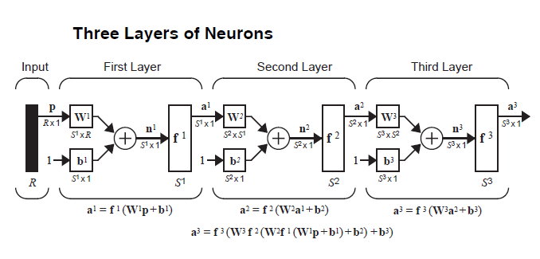
The Recurrent Network
A RNN updates its weights and biases based on the error gradient, similar to how an MLP learns. However, RNNs have connections that allow information to persist over time, making them suitable for sequential data.

How to update weights and baised are discussed in the next section elaborately. We can take a small problem to uderstand the concept better.
The Backpropagation Network
The goal of training an MLP is to minimize the loss function by adjusting the network's weights and biases. This is achieved through backpropagation:
When a neural network makes a prediction, data flows from the inputs to the outputs. This is the Forward Pass. However, the network rarely guesses correctly on the first try. To improve, it must calculate its error and send that error backwards through the network to adjust the weights. This process is called Backward Propagation of Errors, or simply Backpropagation.
At its core, Backpropagation is just the systematic application of the Chain Rule from calculus. It asks one fundamental question for every single weight in the network: "If I change this specific weight by a tiny amount, how much does the final error change?"
Part 1: How It Works (Step-by-Step)
Let's break down the algorithm layer by layer. Assume we have a standard 3-layer architecture: an Input Layer, a Hidden Layer, and an Output Layer.
Step 1: The Forward Pass & Loss Calculation
Data passes through the network to generate a prediction (\(\hat{y}\)). We then use a Loss Function (like Mean Squared Error) to measure how far our prediction is from the actual target (\(y\)).
Step 2: Gradients of the Output Layer
We start working backwards. To update a weight connecting the hidden layer to the output layer (\(w_{out}\)), we need to find the derivative of the Loss with respect to that weight (\(\frac{\partial L}{\partial w_{out}}\)). Using the Chain Rule, this is calculated in three linked parts:
- How does the Loss change with the final prediction? \(\frac{\partial L}{\partial \hat{y}} = (\hat{y} - y)\)
- How does the prediction change with the net input (\(z_{out}\))? We take the derivative of the activation function: \(f'(z_{out})\)
- How does the net input change with the weight? This is simply the activation coming from the hidden layer: \(a_{hidden}\)
We multiply these together to get the gradient. The first two parts are often combined and called the Output Error Signal (\(\delta_{out}\)).
Step 3: Gradients of the Hidden Layer
Now we move one layer deeper. To update a weight connecting the input to the hidden layer (\(w_{hidden}\)), we must pass the error backwards through the output weights.
The Hidden Error Signal (\(\delta_{hidden}\)) is calculated by taking the Output Error Signal (\(\delta_{out}\)), multiplying it by the weight connecting the two layers (\(w_{out}\)), and multiplying that by the derivative of the hidden activation function: \(f'(z_{hidden})\).
Once we have \(\delta_{hidden}\), the gradient for the hidden weight is simply: \(\delta_{hidden} \times \text{Input Value}\).
Step 4: The Weight Update
Finally, we use Gradient Descent to update every weight in the network simultaneously. We multiply the calculated gradient by our Learning Rate (\(\alpha\)) and subtract it from the old weight.
Part 2: Fully Solved 3-Layer Mathematical Trace
Let's put the theory into practice with real numbers across a 3-layer network (Input \(\rightarrow\) Hidden \(\rightarrow\) Output).
Backpropagating doubts through all mental layers.
Q1: What are there in AI which is not Machine Learning?
Q2: Can machine learn without help of human?
Q3: Is chatbot a part of Machine Learning?
9. The activation function: the secret agent.
Neural networks gain their power by stacking layers with different mathematical properties. By using a non-linear activation function in hidden layers and a specific output function at the end, the model can learn almost any complex mapping.
What is it & Why do we need it?
An Activation Function is a mathematical gatekeeper attached to every neuron. It takes the weighted sum of inputs (\(n\)) and determines the final output signal (\(a\)).
The "Secret Agent" Mission: Without these functions, a neural network is just a giant linear regression model. Activation functions introduce Non-Linearity, allowing the network to learn complex, curvy patterns like human faces, spoken words, or stock market trends.
Common Transfer Functions & Implementations
| Name | Graphical Representation | Math Relation | Range | Python (TensorFlow) |
|---|---|---|---|---|
| Hard Limit |  |
\(a = \begin{cases} 0, & n < 0 \\ 1, & n \geq 0 \end{cases}\) | [0, 1] |
N/A (Custom or |
| Linear |  |
\(a = n\) | (-∞, ∞) |
tf.keras.activations.linear |
| Log-Sigmoid |  |
\(a = \frac{1}{1 + e^{-n}}\) | [0, 1] |
tf.keras.activations.sigmoid |
| Hyperbolic Tangent | 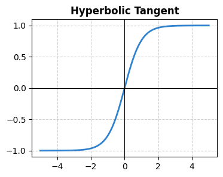 |
\(a = \tanh(n)\) | (-1, 1) |
tf.keras.activations.tanh |
| Positive Linear (ReLU) |  |
\(a = \max(0, n)\) | [0, ∞) |
tf.keras.activations.relu |
| Leaky ReLU | 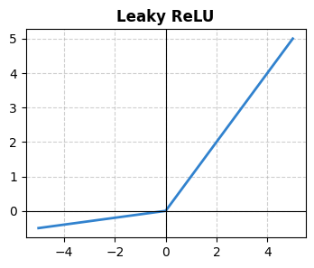 |
\(a = \begin{cases} n, & n \geq 0 \\ 0.01n, & n < 0 \end{cases}\) | (-∞, ∞) |
tf.nn.leaky_relu |
| Softmax (Competitive) | 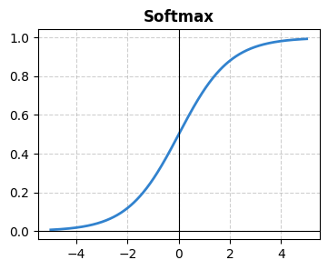 |
\(a_i = \frac{e^{n_i}}{\sum e^{n_j}}\) | [0, 1] |
tf.keras.activations.softmax |
The Architect's Guide: Choosing the Right Function
1. Hidden Layers
- ReLU: The Gold Standard. Cheap, fast, and avoids vanishing gradients.
- Leaky ReLU: Use if your neurons are "dying" (always outputting zero).
- Tanh: Preferable for Recurrent Networks (RNNs).
2. Output Layers
- Linear: For Regression (predicting prices/values).
- Sigmoid: For Binary Classification (Yes/No).
- Softmax: For Multi-class Classification (Cat/Dog/Bird).
Strategic Implementation
Note: You can use different functions in different layers! A standard modern deep network often uses ReLU for all hidden layers and Softmax for the final output layer.
* Note: softmax is the modern differentiable equivalent of the competitive function used in deep learning.
Activation function: ReLU (Really Extremely Lost).
Q1: Do I leave 'Dropout' turned on when I actually use the model in the real world?
Q2: How long should I wait before 'Early Stopping' kicks in?
Q3: How do I actually know what numbers to choose for these dials?
- Batch Size: Start with 32. (Commonly powers of 2: 16, 32, 64, 128).
- Learning Rate: Start with 0.001 (especially if using the Adam optimizer).
- Dropout: Start at 0.2 (dropping 20% of neurons) up to 0.5.
10. The Control Dials: Hyperparameters Explained (Epochs, Batch Size, Learning Rate, Optimizer, Regularization, Dropout)
Up to this point, we have discussed Parameters (the weights and biases). These are the numbers the model learns entirely on its own during training. However, there is a second set of numbers called Hyperparameters. These are the settings you must configure before the training even begins. They dictate exactly how the learning process behaves.
1. Epochs: The Study Sessions
An Epoch is one complete pass of your entire training dataset through the algorithm. Because neural networks learn through gradual optimization (Gradient Descent), passing the data through the network just once is never enough. The network needs to see the data multiple times to update its internal parameters (weights and biases) and get better at predicting.
Imagine you are studying for a massive math exam. If you read the textbook from cover to cover exactly one time, that is 1 Epoch. Will you get a perfect score? Probably not. You need to read the book multiple times (multiple epochs) to truly understand the patterns and memorize the formulas.


Figure 10.1: Left: Animated Training Cycle showing Forward and Backward Passes. Right: Kid revising the same textbook repeatedly to prepare for an exam.
- Why one isn't enough: If you show a model a dataset of historical oceanographic data just once, it will underfit. It needs to see the same data repeatedly to adjust its weights accurately.
- The danger of too many: If you run too many epochs (e.g., 5,000), the model will memorize the training data perfectly but fail on new, unseen data. This is called Overfitting.
2. Batch Size: Processing in Chunks
Datasets are often too massive to push through a network all at once. If you are training a heavy spatial architecture like a Residual U-Net on high-resolution grid data, your GPU simply doesn't have the memory (VRAM) to hold it all. We solve this by dividing the data into chunks.
Because modern datasets are usually too massive to feed into a computer's memory (like a GPU) all at once, the data must be divided into smaller, manageable chunks. The Batch Size is the specific number of training examples the neural network processes simultaneously before it pauses to calculate its errors and update its internal parameters (weights and biases).
Let's stick to the studying analogy. If the entire textbook is your dataset, you wouldn't try to memorize the entire book in one giant gulp before checking if you learned anything. Instead, you might break the material down into stacks of several chapters(batch). You study one chapter at a time (one Batch), take a quick quiz to see what you got wrong, correct your misunderstandings (update the weights), and then move on to the next chapter.
Processing one stack of flashcards and updating your brain is called an Iteration. Once you have gone through every single stack of flashcards, you have officially completed 1 Epoch!
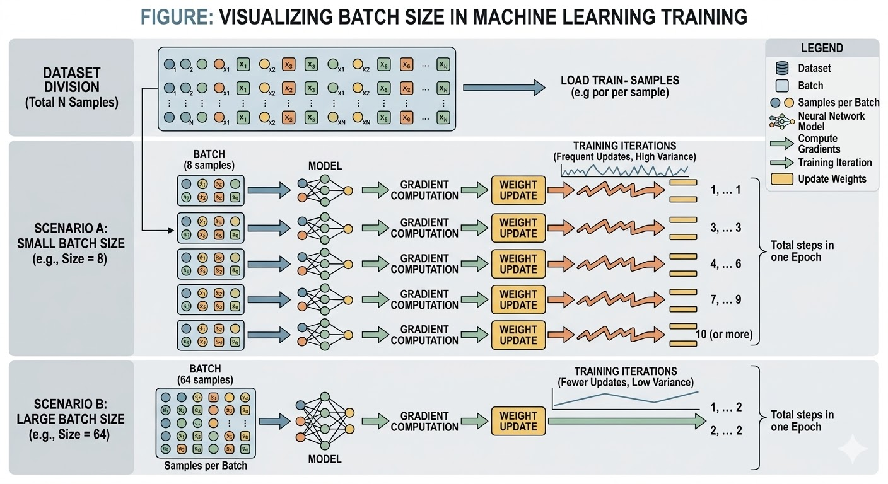

Figure 10.2,3: Left: Static Feed Forward Architecture. Right: Student dividing the material into manageable chunks.
3. Connecting the Dots: The Mathematical Relationship
Epochs and Batch Size are intimately linked by a third, resulting metric: Iterations (often called "steps"). The relationship between them is a simple formula based on the total size of your training data.
Let's bring it back to our study analogy. Imagine your entire exam syllabus has 1,000 flashcards (Total Dataset Size).
- If you set your Batch Size to 100, it means you study 100 cards before pausing to update your understanding.
- It will take exactly 10 study sessions (Iterations) to get through the entire deck.
- Once you finish those 10 sessions, you have completed exactly 1 Epoch.

Figure 10.4: Epoch vs iteration vs batch size relationship. The total dataset size is 1000. Batch size of 100 means 10 iterations per epoch. Batch size of 50 means 20 iterations per epoch, and so on.
Source: Baeldung
If your training plan requires 50 Epochs (reading the whole deck 50 times), your brain will perform a total of 500 individual study updates (Iterations) by the time training is finished. Understanding this math is crucial, as adjusting your batch size directly changes how frequently your model updates its weights during a single epoch!
- Batch Size: The number of training examples processed together in one forward/backward pass.
- Iterations: The number of batches needed to complete one full Epoch.
A common question when tuning hyperparameters is: "If I double my Batch Size, do I need to increase my Learning Rate to compensate?"
Yes. Because a larger batch size processes more data at once, it calculates a much more accurate and stable gradient (meaning less "noise" or random jumping in your step direction). However, because you are processing larger chunks of data at a time, your model takes fewer overall steps per epoch. To ensure the model learns at the same pace and takes full advantage of that increased stability, you need to scale the learning rate up.
1. The Linear Scaling Rule (For Standard SGD)
If you are using a standard optimizer like Stochastic Gradient Descent (SGD), the industry-accepted practice is to scale the learning rate linearly. If you double the batch size, you double the learning rate.
2. The Square Root Scaling Rule (For Adaptive Optimizers)
While the linear rule is standard for SGD, researchers using adaptive optimizers (like Adam or RMSprop) often prefer a more conservative approach. Because these optimizers already adjust their own step sizes dynamically, scaling linearly can sometimes make the initial steps too aggressive. Instead, the rule of thumb is to multiply the learning rate by the square root of the change.
5. The "Safety" Dials: Regularization & Dropout
In Machine Learning, bigger isn't always better. If a model is too complex, it begins to "memorize" the training data (including the noise and errors) rather than "learning" the underlying patterns. This is Overfitting. To stop this, we use the following mathematical and structural "brakes."
Types of Regularization
- 1. Early stopping
- 2. L1, L2
- 3. Drop out
1. Early Stopping:
As a model trains, its error on the training data always decreases. However, there is a turning point where the model stops learning actual patterns and starts memorizing noise. Early stopping is a simple rule: monitor the model's performance on a separate "Validation Set." The moment the validation error stops going down and starts going back up, you immediately stop training. It is the equivalent of taking a test away from a student before they "over-study" and confuse themselves.
2. L1 / L2:
These techniques add a mathematical penalty to the Loss Function based on the size of the model's weights. L1 (Lasso) adds the absolute value of the weights, often pushing unimportant weights to exactly zero (Feature Selection). L2 (Ridge) adds the squared value of the weights, shrinking them to be very small but non-zero, ensuring stability and preventing any single feature from dominating.
To understand L1 and L2 regularization properly, you have to look at them as "penalties" added to the model's total score. In a standard model, the goal is simply to minimize Loss (error). With regularization, the goal changes. Now, the model has to minimize:
If the weights (\(w\)) get too large or complex, the Penalty goes up, and the model gets a "bad grade."
L2 Regularization (Ridge Regression)
L2 is the most common form of regularization. It adds a penalty equal to the square of the magnitude of the weights.
- The Math: \(\text{Penalty} = \lambda \sum w^2\)
- The Behavior: Because it squares the weights, it punishes large weights very harshly (e.g., a weight of 10 becomes a penalty of 100). However, as the weight gets smaller (like 0.1), the penalty becomes tiny (0.01).
- The Result: It nudges all weights to be very small, but almost never exactly zero.
L1 Regularization (Lasso Regression)
L1 adds a penalty equal to the absolute value of the magnitude of the weights.
- The Math: \(\text{Penalty} = \lambda \sum |w|\)
- The Behavior: Unlike L2, the penalty for L1 is constant all the way down to zero. It doesn't get "gentler" as the weight gets smaller.
- The Result: It forces the least important features to become exactly zero. This is called Sparsity. It effectively performs "feature selection" for you.
Key Differences at a Glance
| Feature | L1 (Lasso) | L2 (Ridge) |
|---|---|---|
| Penalty Shape | Diamond (corners at axes) | Circle (smooth) |
| Weight Impact | Can push weights to 0. | Pushes weights to be small. |
| Primary Use | When you want a simple model that only uses the most important data. | When you want to use all data but prevent "bullying" by huge weights. |
| Robustness | Robust to outliers. | Sensitive to outliers (due to squaring). |
What is \(\lambda\) (Lambda)?
In both formulas, you'll see a \(\lambda\) (Lambda). This is the Regularization Strength dial:
- If \(\lambda\) is 0: There is no penalty (Overfitting risk).
- If \(\lambda\) is huge: The penalty is so high the model is scared to learn anything (Underfitting risk).
Q4: How do I choose the value of \(\lambda\) (Lambda) for Regularization?
Because \(\lambda\) acts as a penalty multiplier, you want to test it on a logarithmic scale. Instead of testing 1, 2, 3, 4... you test by factors of 10.
Start very small, like 0.0001 or 0.001. Train the model. If it is still overfitting (scoring high on practice tests but failing the validation test), increase \(\lambda\) by a factor of 10 (e.g., to 0.01). Keep turning up the strictness until the validation score stabilizes.
Summary: Use L2 if you want to keep all your features but keep them in check. Use L1 if you want to simplify your model by deleting the useless features entirely.
Would you like to see the Learning Rate next, to see how the model actually "walks" toward these optimized weights?

Figure 10.5: Epoch vs iteration vs batch size relationship. The total dataset size is 1000. Batch size of 100 means 10 iterations per epoch. Batch size of 50 means 20 iterations per epoch, and so on.
Source: Shubham
Example: The Swimmer's Constraint
Imagine a swimmer with too much energy zig-zagging in their lane, getting distracted by tiny ripples (Overfitting). We put a drag suit or weighted belt on them (the Penalty Term). Because moving is now mathematically "heavy" and expensive, the swimmer can no longer afford to zig-zag. They are forced to ignore the distractions and focus 100% of their energy on the straightest, most efficient path forward.
3. Drop out:
Used primarily in Deep Learning, this technique randomly "turns off" a specific percentage of neurons (e.g., 20% to 50%) during each training iteration. By constantly changing the active architecture of the network, it prevents neurons from co-adapting or relying too heavily on their neighbors to fix errors.

Example: The Random Scrimmage
Imagine a football team that relies entirely on their star player. If that player is covered, the team loses. To fix this, the coach runs a practice where they randomly bench players every few minutes—sometimes even the star. The remaining players can no longer just pass the ball and hide; they are forced to take responsibility and learn to play-make independently. When the whole team plays together later, they are vastly more robust.
 Source: Sports Psychology coach
Source: Sports Psychology coach
Questions escaping dropout regularization.
Q1: Do I leave 'Dropout' turned on when I actually use the model in the real world?
Q2: How long should I wait before 'Early Stopping' kicks in?
Q3: How do I actually know what numbers to choose for these dials?
- Batch Size: Start with 32. (Commonly powers of 2: 16, 32, 64, 128).
- Learning Rate: Start with 0.001 (especially if using the Adam optimizer).
- Dropout: Start at 0.2 (dropping 20% of neurons) up to 0.5.
Q3: If I have a dataset of 1,000 images, and I set my Batch Size to 250, how many Iterations will it take to complete 2 Epochs?
11. TensorFlow and PyTorch: Getting Started-Moving from manual calculus to modern Deep Learning frameworks.
We learnt about the machine learning concepts and their mathematical foundations. If we code this to implementation, we would need to manually handle all the matrix operations and gradient calculations. Our brain works serially for performing any kind of calculation, whereas computers can work parallelly to solve the problem. So why not use pre-defined libraries and environments? It saves time.
The famous libraries are TensorFlow and PyTorch. Both are powerful, but they have different design philosophies and use cases. Let's explore what makes each of them unique and how to get started with installation.
TensorFlow
The name TensorFlow is a direct reflection of how the library handles data and computation. It was created by Google Brain. It is a combination of the two core concepts that drive the framework: Tensors (the data) and Graphs (the flow). More precisely, a tensor is a generalization of scalars (0-dimensional tensor), vectors (1-dimensional tensor), matrices (2-dimensional tensor), and N-dimensional tensors. The flow refers to the Data Flow Graph. The Neural network is a flow of Data Graphs or tensors flowing through the graph.
PyTorch
Unlike early versions of TensorFlow, which felt like writing a different language inside Python, PyTorch was designed to be "Pythonic."
Torch was a scientific computing framework based on a programming language called Lua. It was used extensively by researchers at places like NYU and Facebook AI Research (FAIR). While Torch was powerful and fast, Lua isn't nearly as popular as Python. In 2016, the team at FAIR (now Meta AI) took the powerful C++ backend of Torch and wrapped it in a beautiful, intuitive Python interface. Thus, PyTorch was born.
| Feature | PyTorch | TensorFlow |
|---|---|---|
| Philosophy | Imperative (Eager execution) | Declarative (Graph-based) |
| Learning Curve | Shallow (Feels like Python) | Steeper (Unique syntax/APIs) |
| Main Strength | Research & Prototyping | Production & Deployment |
| Mobile/Edge | PyTorch Mobile (Growing) | TF Lite (Industry Standard) |
| Community | Dominant in Academia | Dominant in Industry/Legacy |
How to install TensorFlow and PyTorch
Before installing, remember that a Tensor is just a container for data. Depending on how much data you have, the "shape" of that container changes.
For installing these frameworks, you need to have a basic Python environment set up on your system. Click on your operating system below to reveal the specific installation commands:
Part 1: Why Do You Need a Virtual Environment?
When you install Python on your computer, it comes with a central "global" storage area for packages. If you open your terminal and type pip install tensorflow, it goes straight into this global space.
The Problem: Dependency Collisions
Imagine you are working on Project A (an older computer vision task) that absolutely requires TensorFlow 2.5 and NumPy 1.19. Six months later, you start Project B (a modern natural language model) that requires PyTorch 2.1 and NumPy 1.24.
If you install Project B's requirements into your global environment, it will overwrite NumPy. Suddenly, Project A is broken. If you try to fix Project A, Project B breaks. This endless cycle of breaking code is known by developers as "Dependency Hell."
Before installing, it is highly recommended to use a virtual environment (likevenv or conda) to keep your project dependencies isolated. Open your terminal or command prompt and run the following commands based on your OS.
Protecting your machine from "Dependency Hell."
The Solution: Isolated Workspaces
A Virtual Environment is an isolated, self-contained directory that contains its own unique Python installation and its own local package manager.
- Isolation: What you install in Environment A cannot affect Environment B.
- Reproducibility: You can easily export a list of the exact package versions in your environment, allowing another researcher to perfectly recreate your setup on their machine.
- Cleanliness: If an environment gets corrupted or messy, you can simply delete the folder and start over without damaging your computer's core operating system.
Part 2: How to Create a Virtual Environment
There are two primary tools used in Data Science to create environments: Conda and Venv. Conda is highly recommended for Deep Learning because it also manages external hardware libraries (like NVIDIA CUDA toolkits for your GPU), whereas Venv only manages Python packages.
Questions escaping dropout regularization.
Q1: Can I install any of the software on my phone or iPad?
Q2: Which laptop is best for Machine Learning?
Q3: Which framework do I (the developer of this tutorial) use?
Q4: Follow-up: Why did you use TensorFlow instead of PyTorch from the beginning?
12. Watching a Model Learn: Epochs, Loss, and the Learning Rate
We know the theoretical goal of Machine Learning: minimize the Loss. But what does that actually look like in real-time? How do the predictions change as the model studies the data over and over again?
The Relationship: Epochs vs. Loss vs. Prediction
Every time the model completes one full pass through your entire dataset, it completes one Epoch. During this pass, two things happen simultaneously:
- The Loss Drops: The model calculates its errors, runs Gradient Descent, and tweaks its internal weights. As epochs increase, the Loss curve should ideally swoop downward and flatten out near zero.
- The Prediction Improves: As the weights are corrected, the model's physical prediction line stops jumping around randomly and begins to snap tightly to the actual data points.
The Puppeteer: The Learning Rate (\(\alpha\))
The speed and success of this entire process are controlled by the Learning Rate. It dictates exactly how drastically the model is allowed to change its weights after each epoch.
Live Training Simulator
Select a Learning Rate and click "Start Training". Watch how the prediction line attempts to fit the data, and watch how the Loss curve reacts!
Data vs. Prediction
Loss Curve
What happens when the Learning Rate is wrong?
- If it is Too Small (e.g., 0.001): The prediction line barely moves. After 150 Epochs, it hasn't even reached the data. The loss curve drops, but agonizingly slowly. You will run out of time or computing budget before the model finishes learning.
- If it is Too Large (e.g., 0.45): The model takes massive, violent steps. The prediction line wildly jumps back and forth past the data. Notice how the Loss Curve doesn't drop—it bounces wildly up and down, and eventually explodes off the chart (Divergence). The model has completely destroyed its own learning.
Visualizing the Trap: Generalization vs. Memorization
To truly understand why overfitting is so dangerous, we have to look at what happens to the math when a model has too much "brainpower" and trains for too long.
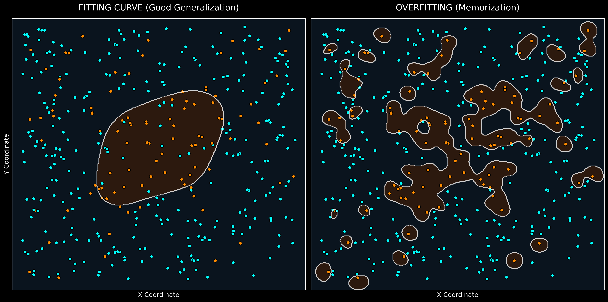
In the image above, the left graph shows a model that has learned the true underlying pattern (a smooth curve). It ignores the random noise.
The right graph shows a model that has memorized the noise. By using an overly complex math formula (a 15-degree polynomial), the model wildly contorts its prediction line to touch almost every single green dot. It scores a near-perfect zero on its Training Loss! But look at the right edge of the graph—the moment you ask it to predict a new value past \(x=10\), the line violently plunges off a cliff. It has completely lost its grasp on reality.
The Anatomy of Early Stopping
Because we can't always visualize a 100-dimensional dataset on a simple 2D graph, Data Scientists rely entirely on Loss Curves to diagnose this memorization in real-time. This is where the technique of Early Stopping comes in to save the day.
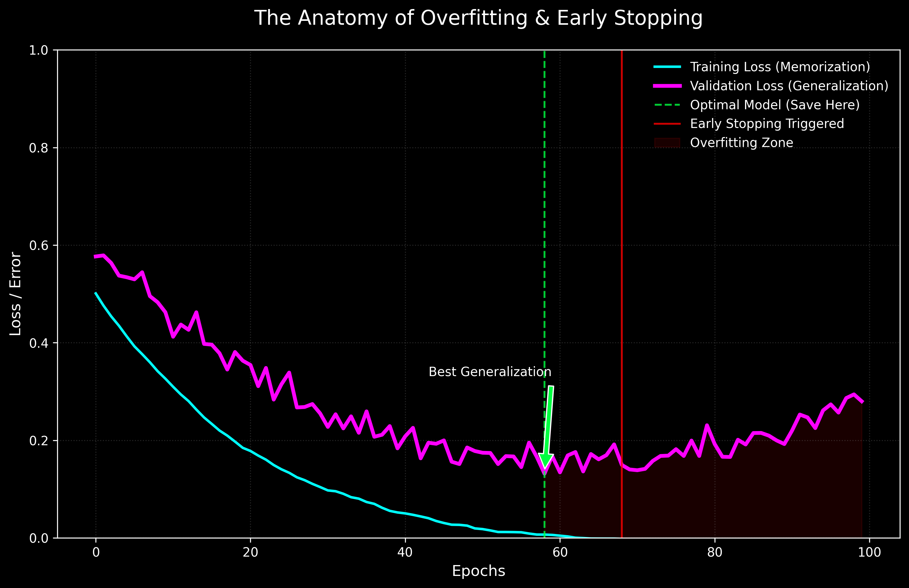
Look closely at Figure 12.2. As the epochs pass, the cyan Training Loss drops continuously. The model thinks it is doing an amazing job. However, the magenta Validation Loss (testing the model on unseen data) tells the true story. It drops initially, hits a minimum ("Best Generalization"), and then begins to climb into the dark red "Overfitting Zone."
How Early Stopping Actually Works in Code (The "Patience" Parameter)
You might think: "Just tell the computer to stop training the exact millisecond the Validation Loss goes up!"
However, if you look at the magenta line in the graph, it is noisy. It constantly bounces up and down. If we stopped the training on the very first upward bounce (say, around Epoch 5), we would ruin the model entirely! It hasn't finished learning yet.
To solve this, Early Stopping uses a clever mechanism built on two rules:
Rule 1: Have "Patience"
We define a parameter called Patience (e.g., patience = 10). This tells the program: "If the Validation Loss goes up, don't panic. Wait and watch for 10 more epochs. If the loss fails to hit a new low after 10 full epochs, then we know for sure it wasn't just a random bounce—it's truly overfitting. Stop the training immediately."
In Figure 4.6, the solid red line shows where the training was officially halted. The program waited patiently to confirm the upward trend before pulling the plug.
Rule 2: Restoring the Best Weights (The "Rewind")
If we stop training at the red line, the model is already slightly overfitted! We don't want to save that version. Because the computer was tracking the loss at every step, it simply rewinds time. It discards the current weights and restores the exact mathematical weights from the dotted green line (the absolute minimum error). You walk away with the smartest possible version of your model.
Early stopping with patience is like watching a stock you own. If the stock drops for one day, you don't instantly sell it (it might just be a noisy market fluctuation). You have patience. You wait a few days to see if the trend is truly going down. Once you confirm it's a crash, you sell. And with Early Stopping's "restore weights" feature, you magically get to sell your stock at the absolute peak price it hit a week ago!
Batch Size (Stochastic vs. Mini-Batch vs. Batch)
An Epoch means the model has seen all the data in your dataset exactly once. However, the model doesn't usually wait to look at every single row of data before it updates its weights.
If you have 10,000 images, computing the loss for all 10,000 before taking a single step down the error mountain is simply too slow and requires too much computer memory. Instead, we have three choices for how to feed the data:
- Stochastic Gradient Descent (Batch Size = 1): The model looks at a single image, calculates the error, and updates its weights immediately. It takes 10,000 tiny, erratic steps per epoch. The loss curve is highly chaotic, but it computes incredibly fast.
- Full Batch Gradient Descent (Batch Size = All Data): The model looks at all 10,000 images, averages the error, and takes one single, highly accurate step. The loss curve is perfectly smooth, but it is incredibly slow and memory-heavy.
- Mini-Batch Gradient Descent (e.g., Batch Size = 32): The "Goldilocks" zone. We look at a small chunk of 32 images at a time, take a step, and repeat. This introduces some "noise" to the loss curve, making it look jagged rather than perfectly smooth, but it computes incredibly fast while remaining stable. This is the default method used in modern Machine Learning.
Batch Loss vs. Epoch Loss
Because we use Mini-Batches, we end up generating two different types of Loss metrics during training:
The Batch Loss is the error calculated after evaluating just one of these tiny chunks. Because each batch contains a random assortment of easy and hard examples, the Batch Loss is highly volatile, bouncing up and down wildly like a noisy stock ticker.
However, once the model has looked at every single batch in the dataset, it completes one Epoch. The Epoch Loss is the mathematical average of all those noisy batch losses. By smoothing out the erratic jumps, the Epoch Loss reveals the true underlying trend: whether the model is actually learning and improving, or just guessing wildly.
Let's Look at the Math: 2 Epochs, 4 Batches
Imagine we have a tiny dataset that we split into exactly 4 batches. Let's look at the console output of a Python program training a model over 2 epochs to see how these numbers behave in reality.
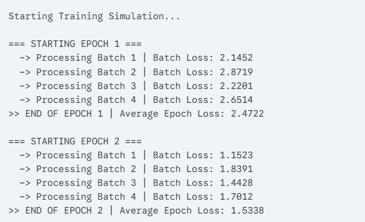
Figure 12.3: Simulated Python output demonstrating the math behind Epoch Loss.
Notice how the individual Batch Losses jump up and down randomly (e.g., in Epoch 1, it spikes from 2.14 up to 2.87, then drops to 2.22). But when you look at the Average Epoch Loss at the end of the cycle, you get a clear, clean signal that the model successfully learned and dropped its overall error from 2.4722 down to 1.5338.
Training can be a roller coaster... let’s smooth it out.
Q1: My Loss Curve is bouncing up and down like a heart monitor instead of a smooth slide. Is my model broken?
Q2: If "Early Stopping" is so great, why don't I just set my Epochs to 1,000,000 and let the computer figure it out?
Q3: I have a massive GPU. Should I just use the largest Batch Size possible to make it train faster?
13. Convolutional Neural Networks (CNNs):
While "Cats vs. Dogs" is a classic milestone in machine learning, we haven’t yet explored how a computer actually makes that distinction. The heavy lifting for this task is done by Convolutional Neural Networks (CNNs). But before we look at the architecture, we have to address a fundamental truth: a machine cannot "see" a fluffy animal or whiskers the way humans do. To a computer, an image is not an object, but a massive grid of numbers representing pixel values, colors, and brightness.
The magic happens when this grid is fed into the CNN. The network doesn't try to understand the whole image at once; instead, it uses layers of mathematical filters to scan the grid. In the initial stages, these filters identify tiny, primitive patterns like sharp edges, vertical lines, and basic textures. At this level, the "brain" of the computer is simply looking for mathematical irregularities in the numbers.
As the data moves deeper through the layers, the network begins to bridge the gap between a "grid of numbers" and the digit "8" by combining simple edges into complex geometric structures. A series of curved lines are stitched together to form a closed loop; two such loops are then recognized as being stacked vertically with a central intersection. By the final layer, the machine has distilled these visual features into a set of probabilities, determining that the presence of two closed circles most closely aligns with the mathematical signature it has learned to associate with the label "8" rather than a "0" or a "3."
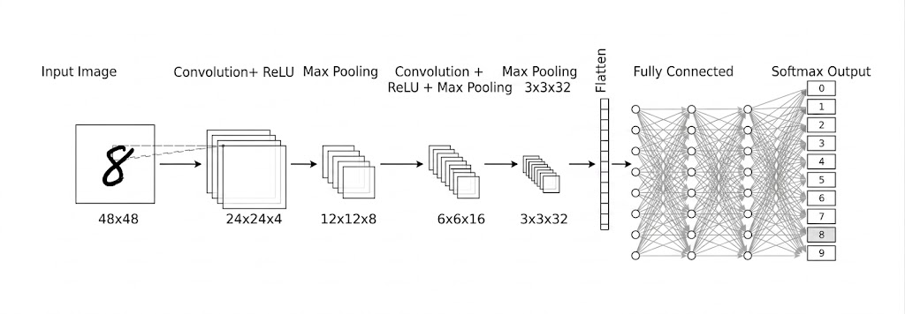
1. The Input: If the machine can't "see," what does it look at?
Instead of eyes of a bird, the CNN uses pixel values. Imagine a black-and-white photo: every pixel is a number from 0 (black) to 255 (white). But how do we turn those numbers into a conclusion? We use a target label. In our case, let's say the label for "Bird" is a code: [1, 0, 0]. The machine’s entire goal is to tweak its internal math until any bird image results in that specific code. The extraction of feature, turning a flat grid of numbers into meaningful information is done by a Kernel. It acts as a set of learnable weights that the network optimizes to distinguish between different objects, such as a bird versus a plane.
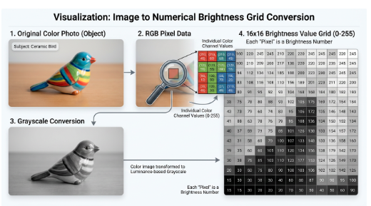
13.1 Mathematical Intuition: Solving for the Kernel
When a network "learns," it is essentially solving a system of linear equations to find the weights of a kernel (\(K\)) that transform an Input (\(I\)) into a specific Output (\(O\)).
\(\begin{bmatrix} 2 & 1 & 0 \\ 1 & 1 & 1 \\ 0 & 1 & 2 \end{bmatrix}\)
\(\begin{bmatrix} a & b \\ c & d \end{bmatrix}\)
\(\begin{bmatrix} 4 & 3 \\ 2 & 5 \end{bmatrix}\)
By sliding the kernel across the input grid, we generate spatial equations. For example, the top-left output (\(4\)) is derived from:
\( 2a + 1b + 1c + 1d = 4 \)
Solving the system for all four positions yields the optimized weights: \(\ a=0, b=1, c=2, d=1 \).
The Training Cycle: From Guesses to Gradients
In complex datasets—like mapping global ocean currents—we cannot solve for weights manually. Instead, kernels start as random guesses and evolve through a Feedback Loop.
- Forward Pass: Image \(\times\) Kernel \(\rightarrow\) Prediction.
- Backpropagation: Tracing "blame" for errors back to specific weights using the Chain Rule.
- Optimization: Adjusting the weights using Gradient Descent:
\(w_{new} = w_{old} - (\eta \times \text{Gradient})\)
13.2 Pooling
1. What is Pooling?
Pooling is a down-sampling operation. It reduces the spatial size (Width and Height) of the image representation. It usually follows a Convolution layer. The most common type is Max Pooling.
Imagine a \(2 \times 2\) window sliding across your feature map with a stride of 2 (meaning it jumps 2 pixels, so there is no overlap). In each \(2 \times 2\) block, it looks at the four numbers, keeps only the largest one, and throws the other three away.
2. Why is it needed?
- Computational Efficiency: By shrinking a \(224 \times 224\) image down to \(112 \times 112\), you've removed 75% of the data. This makes the math much faster for the next layers.
- Feature Invariance (Robustness): Imagine a cat's ear is at pixel \((50, 50)\) in one photo and \((52, 52)\) in another because the cat tilted its head. Max Pooling looks at a general area; if the "ear feature" is anywhere in that \(2 \times 2\) block, the output is the same. This helps the machine recognize the cat even if it moves slightly.
- Controlling Overfitting: By discarding "noisy" or less important pixel details, the model is forced to learn the most dominant, global features rather than memorizing every tiny pixel of the training set.
3. How does it mathematically give the "Correct" result?
You might wonder: "If we are throwing away 75% of the data, aren't we losing information?" Mathematically, Pooling works because of Spatial Correlation. In an image, pixels that are next to each other are usually very similar.
The Logic of "Max": In a Convolutional layer, a high number represents a "hit"—it means the kernel found the feature it was looking for (like a sharp edge). If we have a \(2 \times 2\) area and one pixel is a 9 (strong edge) and the others are 1, 0, and 2, the "9" is the only thing the next layer needs to know. The exact location of that "9" within that tiny square isn't as important as the fact that a strong edge exists in that vicinity.
4. The Math of the Shrinkage
If you have an input size \(W\), a filter size \(F\), and a stride \(S\), the new size is calculated as:
In a standard \(2 \times 2\) pool with stride 2, this simplifies to exactly half the width (\(\frac{W}{2}\)). This reduction allows the network to gradually "zoom out," turning a grid of raw pixels into a grid of high-level concepts like "ear," "tail," or "eye."
While Max Pooling is the most popular choice, it isn't the only way to summarize an image. Depending on the task—whether it's identifying a cat or performing super-resolution on ocean currents—different mathematical "summaries" are required.
1. Max Pooling
Max Pooling: Picks the largest value in the window. It acts as a "Feature Hunter," highlighting the sharpest edges and most prominent textures.
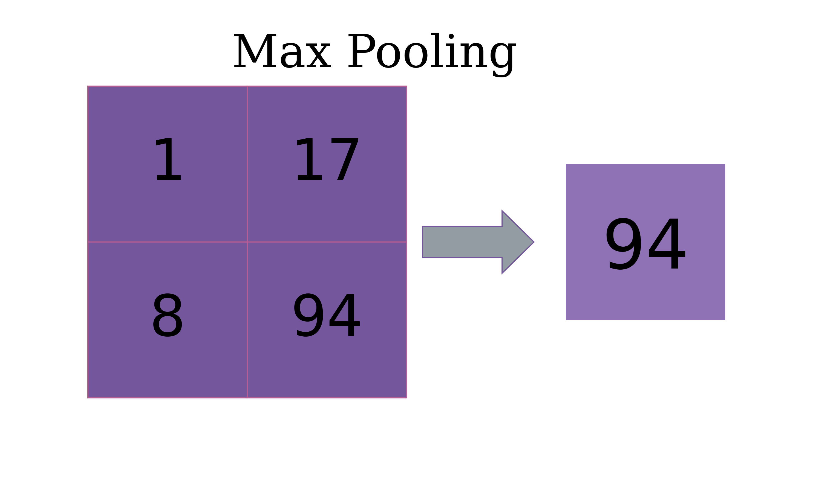
2. Min Wavelet Pooling
Min Pooling: Picks the smallest value in the window. It acts as a "Feature Hunter," highlighting the sharpest edges and most prominent textures.
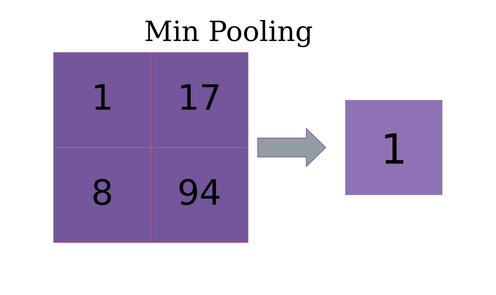
3. Average Pooling
Average Pooling: Calculates the mean of all values in the window. It acts as a "Smoother," retaining a sense of the background rather than just the sharpest points.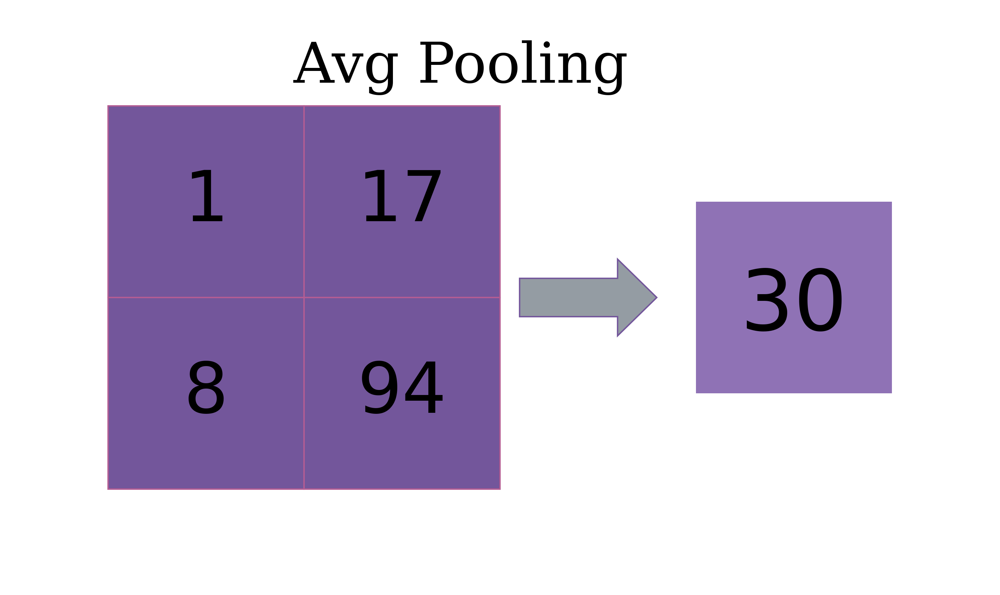
4. Haar Wavelet Pooling (The Spectral Approach)
Standard pooling (like Max or Average) often throws away too much information, which can be a problem for tasks like Super-Resolution. This is where Haar Wavelet Pooling comes in.
Instead of just picking one number, it decomposes the image into four different components using the Haar Wavelet Transform:
- LL (Low-Low): A down-sampled, blurred version of the original (the "Average").
- LH, HL, HH: These capture the Vertical, Horizontal, and Diagonal details (the "High-frequency" noise/edges).
Why is this better? Unlike Max Pooling, Haar Wavelet Pooling is invertible. It allows the network to shrink the data size without permanently losing the fine-grained structural details needed to reconstruct a high-resolution image later.
The Four Components:
-
1. LL (Low-Low): The "Approximation" or blurred version of the original.
LL = (a + b + c + d) / 2 -
2. LH (Low-High): Captures Vertical edges and changes.
LH = (a - b + c - d) / 2 -
3. HL (High-Low): Captures Horizontal edges and changes.
HL = (a + b - c - d) / 2 -
4. HH (High-High): Captures Diagonal details and textures.
HH = (a - b - c + d) / 2
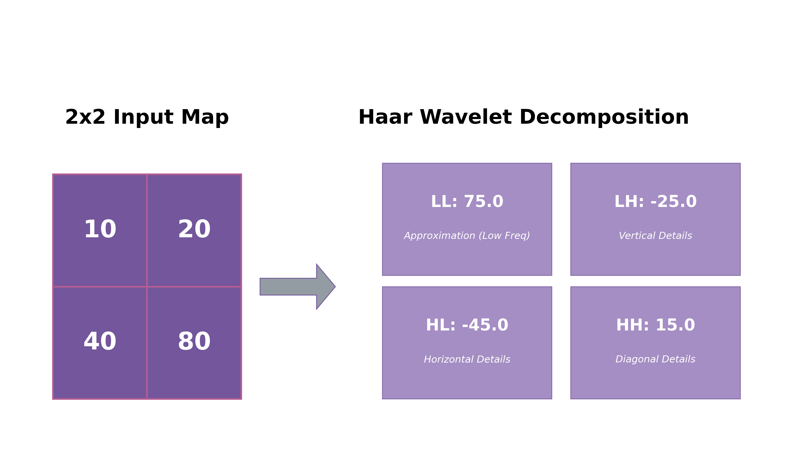
5. Global Average Pooling (GAP)
Usually found at the very end of a network, GAP takes an entire feature map (e.g., \(7 \times 7\)) and averages it into one single number. This drastically reduces the number of parameters and helps prevent the model from simply memorizing the training data.
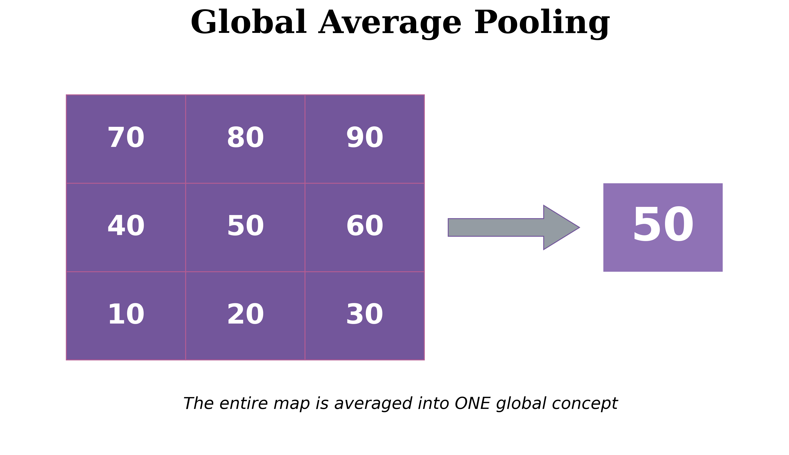
Summary Comparison
| Type | Operation | Best For... |
|---|---|---|
| Max | Highest value | Edges and sharp shapes |
| Average | Mean value | Smoothing/Background info |
| Haar Wavelet | Frequency decomposition | Super-resolution & detail retention |
| Global | One average per map | Final classification layers |
Pooling: The "Executive Summary" Layer
Think of Pooling as the "Executive Summary" of the Convolutional Neural Network. If the Convolution layers are the detectives looking at every tiny pixel through a magnifying glass, the Pooling layer is the manager who says, "I don't need the full report; just give me the highlights."
13.3 The Secret Ingredient: Activation (ReLU)
In your journey through a CNN, there is a hidden hero that sits between the Convolutional layer and the Pooling layer: the ReLU (Rectified Linear Unit). While it sounds complex, it is actually the simplest math in the entire network, but also the most important.
1. Why do we need it? (The Nonlinearity Problem)
Convolution is just linear multiplication. If you stack a hundred Convolution layers together without an activation function, they still behave like one single, giant linear calculator.
Real-world data—like the complex, turbulent swirls in ocean currents—is non-linear. To understand these complex patterns, the network needs a way to "break" the linearity. ReLU is the tool that introduces this "bend" in the math, allowing the network to learn sophisticated features.
2. The Logic: "The All-or-Nothing Filter"
The mathematical formula for ReLU is:
f(x) = max(0, x)
This means:
- If the input number is positive, it passes through unchanged.
- If the input number is negative, it is instantly turned into zero.
Why turn negatives to zero? In a CNN, a negative value from a kernel usually means "The feature I'm looking for is NOT here." By turning these to zero, ReLU tells the network to stop wasting energy on "false alarms" and only focus on the positive "hits."
3. Comparison: Before and After ReLU
| Feature Map Value | ReLU Output | Meaning |
|---|---|---|
| 15.5 | 15.5 | Strong feature detected! Keep it. |
| 0.2 | 0.2 | Weak feature detected. |
| -8.4 | 0.0 | Feature not found. Discard as noise. |
Without ReLU, your CNN would be a "blurry" calculator. With ReLU, it becomes a sharp feature extractor that can distinguish between the core structure of an ocean current and irrelevant background noise.
13.4 The Boundary Problem: Stride and Padding
When a kernel slides across an image, it faces a physical dilemma: The center pixels get more attention than the edges. If you slide a \(3 \times 3\) kernel over a \(3 \times 3\) image, the kernel can only fit exactly once. Your output becomes a single \(1 \times 1\) pixel. The image "shrinks" every time you apply a filter.
1. What is Stride? (The Step Size)
Stride is the number of pixels the kernel "jumps" as it slides.
- Stride 1: The kernel moves 1 pixel at a time. This keeps the most detail but creates a large output.
- Stride 2 (or more): The kernel skips pixels. This effectively down-samples the image, similar to pooling.
2. What is Padding? (The Protective Border)
To prevent the image from shrinking and to make sure the edge pixels are treated fairly, we use Padding. We wrap the image in a "border" of extra pixels (usually zeros).
The Logic: By adding a border of 1 pixel of zeros around a \(3 \times 3\) image, it effectively becomes a \(5 \times 5\) image. Now, when the \(3 \times 3\) kernel slides across it, the output is exactly \(3 \times 3\) again.
13.5 Types of CNN Architectures: From LeNet to ViT
Since their inception, Convolutional Neural Networks have evolved from simple linear stacks into sophisticated architectures. Each breakthrough was designed to solve a specific mathematical limitation, such as parameter explosion or gradient signal loss.
1. Classical Architectures (VGG & Foundations)
The classical era focused on establishing the Convolution → Pooling → Fully Connected pipeline. The most significant advancement here was VGGNet (2014).
- Parameter Efficiency: Three \(3 \times 3\) filters use fewer weights than one \(7 \times 7\).
- Non-Linearity: It provides three ReLU activation layers instead of one, allowing the model to learn more complex "swirls" and features.
2. GoogLeNet / Inception: The "Wide" Approach
While others went deeper, Google asked: "Why choose one filter size? Why not use all of them at once?"
- Inception Modules: Instead of a single layer, this module runs \(1 \times 1, 3 \times 3,\) and \(5 \times 5\) convolutions simultaneously. It then stitches the results together.
- Dimensionality Reduction: It uses \(1 \times 1\) convolutions as "bottlenecks" to squash the data before expensive math, making it 12x lighter than the older AlexNet.
3. ResNet: The Skip Connection Revolution
In traditional deep models, the "training signal" (gradient) becomes so weak as it travels backward that the early layers stop learning. This is the Vanishing Gradient problem.
Mathematically, the layer only has to learn the difference (the residual) between the input and output, rather than a brand-new mapping. This allowed models to jump from 20 layers to 152 layers deep.
4. U-Net: The Scientist's Choice
For tasks like Ocean Current Super-Resolution, standard CNNs fail because they lose spatial resolution. U-Net (2015) solves this with its unique symmetric shape.
- Encoder (The Down-path): Shrinks the image to understand the "global" context.
- Decoder (The Up-path): Expands the image back to its original size.
- Bridge Connections: Crucially, it passes high-resolution "raw" details directly from the encoder to the decoder. This is what allows you to reconstruct tiny eddies and swirls from a low-res map.
5. Beyond Convolution: Vision Transformers (ViT)
The latest evolution moves away from "sliding windows" entirely. Vision Transformers treat an image like a sentence made of "patches." They use Global Self-Attention, allowing every pixel to "talk" to every other pixel simultaneously, providing a much deeper understanding of large-scale global patterns.
Selection Guide: Which Type to Use?
| Requirement | Recommended Architecture | Scientific Application |
|---|---|---|
| Stable Baseline | ResNet-50 | Standard feature extraction from satellite data. |
| Resource Efficiency | EfficientNet | Real-time processing on remote sensors. |
| Spatial Reconstruction | U-Net | Super-Resolution and Fluid Dynamics mapping. |
| Global Patterns | Vision Transformer | Global climate modeling and long-range ocean currents. |
Because the Kernel slides across the image, a CNN doesn't care where an object is. If it learns how to detect a shape in the top-left corner, it uses those exact same weights to detect that shape in the bottom-right corner. This is called Translation Invariance, and it is the superpower of modern computer vision.
The CNN Brain: Deep sight, deeper questions.
Q1: If a CNN "sees" an image through hundreds of Kernels, why don't we just pre-design them to look for circles or lines ourselves?
Q2: We use Padding to keep the image from shrinking, but doesn't adding a "border of zeros" create fake data at the edges of my map?
Q3: Max Pooling throws away 75% of my data. For my Super-Resolution project, shouldn't I avoid it entirely to keep all the details?
14. The Supervised U-Net: Encoder-Decoder Architecture
The U-Net is a specialized CNN designed for "Image-to-Image" tasks. The name was coined in 2015 by Olaf Ronneberger, Philipp Fischer, and Thomas Brox in their famous paper, "U-Net: Convolutional Networks for Biomedical Image Segmentation." They designed it this way because medical images require you to know exactly which pixel belongs to which object, and the "U" structure is the most efficient way to achieve that pixel-level precisionThe name U-Net is quite literal—it refers to the unique, symmetrical "U" shape of the network's architecture when it is visualized on paper.
The U-Net usually gather important information every step by skiping the non important details. So in the encoder part it scrinks the image to capture the context, and in the decoder part it expands the image to capture the localization. In mathematical context it work like Singular value decomposition. So the bottom part "the bottleneck" holds the most important information of the image. Let's study the architecture of the U-Net in more details.

1. The Contracting Path (The Encoder)
This is the left side of the "U." It acts like a traditional CNN:
- Operation: Repeated application of two \(3 \times 3\) convolutions, each followed by a ReLU and a \(2 \times 2\) Max Pooling.
- Goal: To capture the Context. It reduces the spatial resolution (shrinks the map) while increasing the "depth" (finding more complex features like current velocity or pressure gradients).
2. The Bottleneck
At the very bottom of the "U," the data is at its smallest spatial size but its deepest feature representation. This is where the most abstract "physics" of the ocean current are stored.
3. The Expansive Path (The Decoder)
This is the right side of the "U." Its job is to take the abstract features and project them back into a high-resolution grid:
- Operation: It uses Up-convolutions (Transposed Convolutions) to increase the size of the image.
- Goal: To capture Localization. It rebuilds the image pixel-by-pixel to match the original input's dimensions.
4. The "Secret Sauce": Skip Connections
This is what makes U-Net famous. At each level of the expansion, the model concatenates (crops and pastes) the high-resolution feature maps from the Encoder directly into the Decoder.
How does the skip connection work?
The Mathematics of Feature Restoration
To truly understand how a Skip Connection corrects a blurry image, let’s trace a single \(2 \times 2\) block through the network using a concrete numerical example.
1. Information Compression
In the Encoder, we start with high-resolution data (the "Sharp Reality"). However, downsampling forces a choice:
2. The Decoder's "Blurry Guess"
The Bottleneck processes the "10" through its layers (MLP or Transformers) and produces a transformed output, say 7. The Decoder then upsamples this value to rebuild the \(2 \times 2\) grid:
3. The Fusion (Concatenation)
The Skip Connection saves the day by pasting the original Encoder matrix next to the Decoder's guess:
4. The Forward Pass (Element-Wise)
Let's look at the Top-Left pixel. The network applies learnable weights (\\(w_e\\) for Encoder, \\(w_d\\) for Decoder). Assume initial weights are 0.5 with no bias (\(b=0\)):
5. Error Analysis & Backpropagation
If the Ground Truth (\(Y\)) for this pixel is 10, the network identifies an error of -1.5.
Gradients: $$\frac{\partial L}{\partial w_e} = (-1.5) \cdot 10 = \mathbf{-15}$$ $$\frac{\partial L}{\partial w_d} = (-1.5) \cdot 7 = \mathbf{-10.5}$$
6. The Correction (Weight Update)
Using a Learning Rate (\(\eta = 0.01\)), the weights are updated (\(w_{new} = w_{old} - \eta \cdot \text{Grad}\)):
- ✅ New Encoder Weight: \(0.5 - (0.01 \cdot -15) = \mathbf{0.65}\) (Increased)
- ⚠️ New Decoder Weight: \(0.5 - (0.01 \cdot -10.5) = \mathbf{0.605}\) (Increased less)
Result: In the next pass, the new Output becomes 10.735. The network has learned that the Encoder value (10) is a much stronger "signal" for the truth than the Decoder guess (7).
The Haar Wavelet Skip Connection: Mathematical Restoration
In a standard U-Net, Max Pooling throws away details. In a Wavelet U-Net, the Haar Transform decomposes the image into four components, sending the "Average" to the bottleneck and saving the "Details" for the skip connection.
1. The Encoder: Haar Decomposition
Instead of picking the maximum value, the encoder calculates the Average (LL) and three Detail Coefficients (LH, HL, HH).
- \(LL\) (Low-pass): Average of all pixels = 6.25 → Sent to Bottleneck
- Details (\(H, V, D\)): Horizontal, Vertical, and Diagonal variations → Sent to Skip Connection
2. The Bottleneck Transformation
The Bottleneck processes the average flow (6.25). Through its learned layers, it transforms this into a "Semantic Guess":
3. The Decoder: Inverse Haar (IHWT)
The Decoder receives the 4.75 from the bottleneck and the Original Details from the Skip Connection. It uses the Inverse Haar Formula to reconstruct each pixel \(x_{mn}\):
| (\(x_{11}\)) | = \(LL + LH + HL + HH\) | = \(4.75 - 0.25 + 1.25 + 2.75\) | = 8.5 |
| (\(x_{12}\)) | = \(LL - LH + HL - HH\) | =\(4.75 - (-0.25) + 1.25 - 2.75\) | = 3.5 |
| (\(x_{21}\)) | = \(LL + LH - HL - HH\) | = \(4.75 - 0.25 - 1.25 - 2.75\) | = 0.5 |
| (\(x_{22}\)) | = \(LL - LH - HL + HH\) | = \(4.75 - (-0.25) - 1.25 + 2.75\) | = 6.5 |
4. Why Haar Skip Connections Win
In your ocean super-resolution research, this method is superior to standard Max Pooling for two reasons:
- Lossless Reconstruction: While Max Pooling discards 75% of the data, the Haar Transform preserves 100% of the energy in the detail coefficients.
- Mathematical Precision: Instead of a convolutional layer "guessing" where an eddy edge is, the Inverse Haar uses exact subtraction/addition logic to restore the gradients precisely where they were in the input.
5. Supervised Learning: The Training Loop
In a Supervised U-Net, the training follows these steps:
| Component | Description |
|---|---|
| Input | Low-resolution ocean current map. |
| Ground Truth | The known high-resolution version of that same map. |
| Loss Function | Calculates the pixel-wise difference (usually MSE or MAE) between the U-Net output and the Ground Truth. |
| Optimizer | Updates the weights in the "U" to minimize the error. |
The U-Net Brain: Restoring the Sharpness
Q1: If the Bottleneck already contains the "most important information," why do we need to paste the Encoder data back in via Skip Connections?
Q2: In the Haar Wavelet example, why is the "Inverse Haar" better than just resizing a blurry image back to full size?
Q3: My U-Net is training well, but the coastal boundaries of my ocean current map are still slightly messy. What part of the "U" is failing?
15. Beyond Convolution: The Transformer
When you ask a chatbot, "How Machine Learning overpowers traditional programming?", the Transformer doesn't just read the words in order; it builds a map of relationships through three main steps:
In traditional machine learning, models processed language like a person reading a book one word at a time, from left to right. If a sentence was too long, the model would often "forget" the beginning by the time it reached the end. The Transformer, introduced in 2017, changed this by treating a sentence not as a sequence, but as a simultaneous web of connections
Instead of reading linearly, the Transformer looks at every word in a sentence at once. It functions like a high-speed processor that calculates the "relational distance" between every pair of words, allowing it to understand context, solve "jumbled" logic, and build coherent meaning from raw data.
When we move from NLP (words) to Computer Vision (pixels), we call the architecture a Vision Transformer (ViT). However, since pixels are very small, we often use a CNN as a "front-end" to help the Transformer see better.
Transformer can be explained by the following example. A kid making a meaning a house from the lego. It thinks which part of the lego best suits to the other lego and by this connection it creates the whole house.
Transformer is now widely used in computer vision, especially in image classification and object detection. So the pixels are treated as "tokens" in the Transformer architecture. It checks the which pixel matches bext to which one. and then give the prediction.
The Mathematical Engine: A Numerical Walkthrough
To understand the "intelligence" of a Transformer, we must look at how it calculates relationships.
The Sentence: "Machine learning is smart."
The Goal: Calculate the new, context-aware representation of the word "Machine."
1. The Raw Ingredients (Input \(X\)): Each word is converted into a \(1 \times 3\) vector.
Machine (\(x_1\)): \([1, 0, 1]\) | Learning (\(x_2\)): \([0, 1, 1]\)
$$X = \begin{bmatrix} 1 & 0 & 1 \\ 0 & 1 & 1 \end{bmatrix}$$2. Creating Queries (\(Q\)), Keys (\(K\)), and Values (\(V\)): The model uses trained "experience" matrices.
\(Q = \begin{bmatrix} 2 & 1 \\ 1 & 2 \end{bmatrix}, K = \begin{bmatrix} 1 & 2 \\ 2 & 1 \end{bmatrix}, V = \begin{bmatrix} 2 & 1 \\ 1 & 0 \end{bmatrix}\)
3. Scoring the Connection (\(QK^T\)): We compare the Query of "Machine" against all Keys.
$$\text{Score} = Q \cdot K^T = \begin{bmatrix} 4 & 5 \\ 5 & 4 \end{bmatrix}$$4. The Softmax "Chef's Recipe" (\(S\)): Scores become probabilities (Weights).
Weight for "Machine": \(0.27\) | Weight for "Learning": \(0.73\)
Analysis: The model mathematically decides to listen to "Learning" 73% of the time to understand "Machine."
5. The Final Mix (\(Z = S \cdot V\)): The "Chef" mixes the info.
$$Z = \begin{bmatrix} 0.27 & 0.73 \\ 0.73 & 0.27 \end{bmatrix} \cdot \begin{bmatrix} 2 & 1 \\ 1 & 0 \end{bmatrix} = \begin{bmatrix} 1.27 & 0.27 \\ 1.73 & 0.73 \end{bmatrix}$$Understanding the Result (\(z_{Machine} = [1.27, 0.27]\)): Originally, "Machine" was a generic vector. After Step Five, it physically contains the mathematical "DNA" of the word Learning.
- The Query (\(Q\)) of your target pixel looks at the Keys (\(K\)) of pixels 50km away.
- Step Five "mixes" the velocity or temperature gradients from those distant pixels into your target pixel.
- The Result: Your model reconstructs a "Smart" high-resolution pixel by "borrowing" physical context from the surrounding ocean.
Refining Accuracy: Moving to 100% Connection
As a model trains, it becomes more certain. If the connection between "Machine" and "Learning" is perfect, the Softmax values sharpen.
Updated Output (\(Z\)): \(Z_{Machine} \approx (1.00 \times V_{Learning}) = [1.0, 0.0]\)
By pushing the weight to 100%, the model stops "blurring" concepts and creates Sharp Connections. In your ocean maps, this is how the Transformer identifies a sharp current boundary. It focuses 100% on the most relevant physical clues and ignores the noise.
Final takeaway: The Transformer is a dynamic weighted average engine. It doesn't just "guess"; it reconstructs reality by assembling the most relevant "Lego" pieces of data from across the entire grid.
The Transformer: Seeing the Big Picture
Q1: If Transformers are so smart at seeing the "whole picture," why do we still use CNNs as a "front-end" for Vision Transformers (ViT)?
Q2: The Math shows "Machine" borrowing DNA from "Learning." In my ocean maps, does this mean a pixel in the Taiwan Strait can "borrow" data from a pixel near Japan?
Q3: My Transformer model is taking a very long time to train compared to my U-Net. Is it just because it's more "complex"?
16. The Power of Unsupervised Learning: The Autoencoder
In the world of machine learning, Unsupervised Learning is like exploring a new city without a map. You have no labels, no directions, just raw data. Unsupervised learning is like a system teaching itself, no instructions, just trial and error (and fewer coffee breaks than us). In Figure 16.1, the little robot is a perfect example: it learns to balance on the bike by wobbling, adjusting, and trying again until it rides smoothly all on its own.
The Autoencoder is special because it is a self-taught model. By using the input as its own target, it learns to find order in chaos without needing human labels.
The Hourglass Principle
The model is physically forced into a Bottleneck. This constraint is the "special sauce" of the architecture:
- Compression: It acts like a high-performance .zip file for your ocean data.
- Feature Discovery: It identifies Latent Variables hidden physical laws that explain why the water moves the way it does.
- Denoising: It learns to separate the "Signal" (the actual current) from the "Noise" (sensor errors).
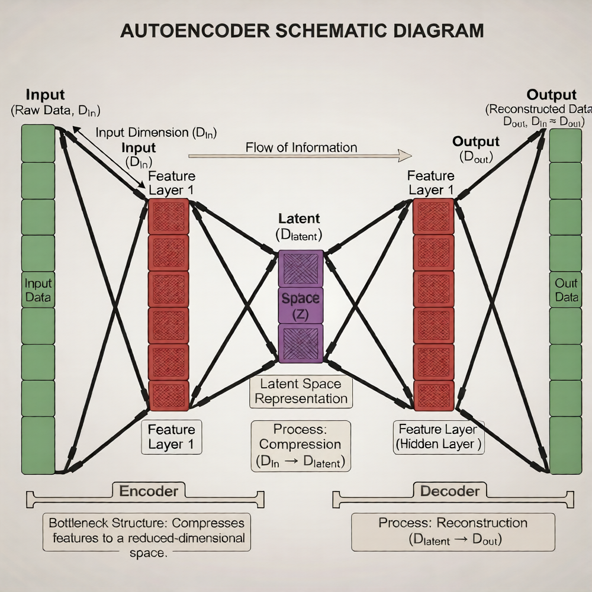
Deep Autoencoder Mathematical Walkthrough
This document details the Forward Pass and Backward Pass (Weight Update) for a 4-2-1-2-4 Stacked Autoencoder.
1. The Architecture & Setup
The network consists of two encoder layers and two decoder layers. The goal is to compress a 4D vector into a 1D bottleneck and reconstruct it.
- Input (\(\mathbf{x}\)): \(\begin{bmatrix} 4 & 2 & 0 & 2 \end{bmatrix}^T\)
- Learning Rate (\(\eta\)): 0.1
- Activation: Linear
Initial Weights
2. Forward Pass (Reconstruction)
3. Backward Pass (Gradient Descent)
To update the weights, we calculate the gradient of the Loss with respect to each weight matrix.
A. The Reconstruction Error
B. Decoder Updates
Updating \(W_4\):
Updating \(W_3\):
Then backpropagate through the remaining layers and update the remaining weight matrices till the input and output are consistent.
The Autoencoder: Finding Order in the Chaos
Q1: If an Autoencoder's only job is to copy the input to the output, why don't we just use a simple copy-paste command?
Q2: In the math walkthrough, the reconstruction was [2, 2, 2, 2] while the input was [4, 2, 0, 2]. Does this mean the model failed?
Q3: How can I use an Autoencoder to "clean" my ocean current data if I don't know what the "clean" data is supposed to look like?
17. Generative Adversarial Networks (GANs): The Art of Deception
So far, we’ve been focusing on neural networks that specialize in analyzing data. For example, when you give a Convolutional Neural Network (CNN) an image, it processes the visual information and produces a label such as “This is a cat.” Models that operate in this way mapping input data directly to a label or category are known as discriminative models. They are designed to distinguish between different classes by learning the boundary that separates them.
But what if we want to do the exact opposite? What if we want to give the network random noise, and have it output a brand new, highly realistic picture of a cat that has never existed in the real world? This requires a Generative model, and the most famous architecture for this is the GAN.
The Analogy: The Counterfeiter and the Detective
The brilliance of a GAN is that it isn't just one neural network. It is two completely separate neural networks locked in a fight to the death. This "adversarial" battle is what forces the system to produce incredible results.
1. The Generator (The Counterfeiter)
Generator is like a con man. It starts by taking a block of completely random, meaningless numbers (called Noise) and passes it through its layers to generate an image. At first, its drawings are terrible just random static. Its only goal is to trick the Detective into thinking its fake image is real.
2. The Discriminator (The Detective)
The Discriminator is an mart man or expert detective. It is handed a stack of images. Half of the images are real photographs from a training dataset, and the other half are the fakes created by the Generator. Its only job is to look at an image and output a probability: "Is this Real or Fake?"
In this GAN analogy, the Scammer (Generator) acts as a forger who constantly evolves his "data" the fake investment papers to look indistinguishable from reality, while the Common Man (Discriminator) acts as the evaluator who calculates the truth to distinguish between real opportunities and fake schemes. As the scammer receives the "loss signal" of being rejected, he improves his "training" by making his paperwork more sophisticated, forcing the common man to refine his own calculations to keep spotting the fraud. The goal of this "adversarial" loop is for the generator to become so skilled at cheating that the discriminator can no longer tell the difference between a genuine investment and a total scam.


The Training Loop: An Evolutionary Arms Race
When training begins, both networks are terrible at their jobs. The Generator makes obvious static, and the Discriminator makes random guesses. But here is how they learn from each other:
- If the Discriminator successfully catches a fake, the Generator is penalized. The mathematical feedback tells the Generator exactly how it was caught, forcing it to update its weights to create a slightly better forgery next time.
- If the Generator successfully tricks the Discriminator, the Discriminator is penalized. It is forced to update its weights to look for smaller, more subtle flaws in the fake images.
They train simultaneously in a zero-sum game. As the Detective gets better at spotting flaws, the Counterfeiter is forced to become a master artist. Eventually, the Generator becomes so unbelievably good that the Discriminator is forced to guess 50/50. it can no longer tell the difference between reality and the AI's imagination!
The GAN Family Tree: Specialized Architectures
The invention of the original GAN in 2014 was a massive breakthrough, but it was notoriously unstable. The Generator would frequently collapse and output the exact same blurry image over and over again (a failure known as Mode Collapse).
To fix these mathematical instabilities and give the AI new capabilities, researchers have evolved the original GAN into a massive family of specialized architectures. Here are the most important variations you need to know:
1. DCGAN (Deep Convolutional GAN)
The Upgrade: Giving the artist better brushes.
DCGAN replaced standard flat layers with Convolutional (CNN) layers. By using convolutions, the Generator became drastically better at understanding 2D geometry, leading to the first generation of truly recognizable AI-generated faces and objects. Almost every modern GAN is built on the backbone of DCGAN.
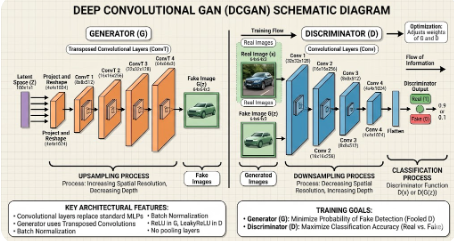
2. CGAN (Conditional GAN)
The Upgrade: Adding a "steering wheel" to the Generator.
Original GANs were random; you couldn't tell the AI what to draw. CGAN fixed this by feeding a "label" (like the word "Cat" or a specific class ID) into both the Generator and Discriminator. Now, the Generator doesn't just learn to make a realistic image; it learns to make a realistic image that matches the label you provided. This is the foundation for text-to-image AI.
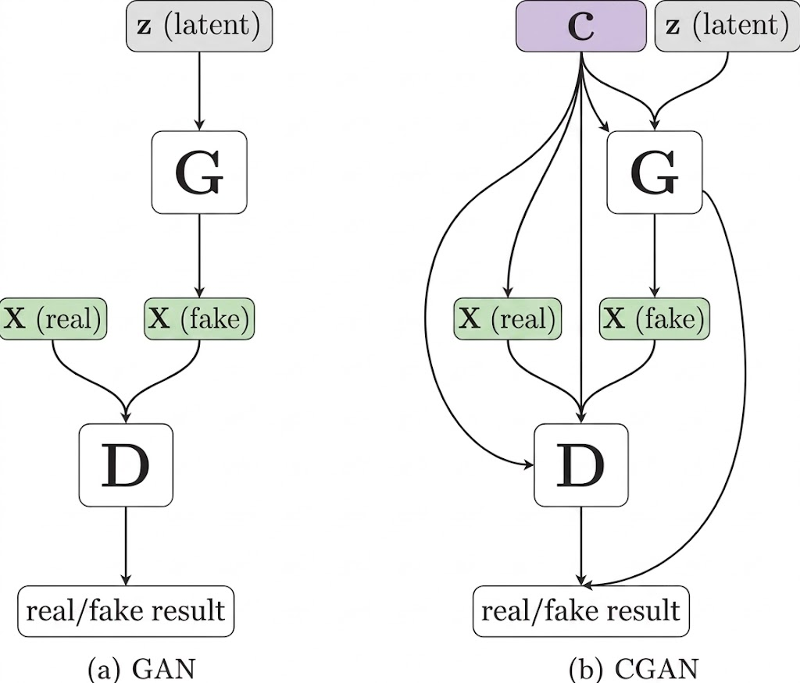
3. CycleGAN
The Upgrade: The ultimate visual translator.
CycleGAN learns to map concepts from one domain to another (like turning a Horse into a Zebra) using unpaired data. It uses "cycle consistency loss"—meaning if you turn a horse into a zebra and then back into a horse, the final image should look exactly like the original. This ensures the AI changes the style without destroying the content.
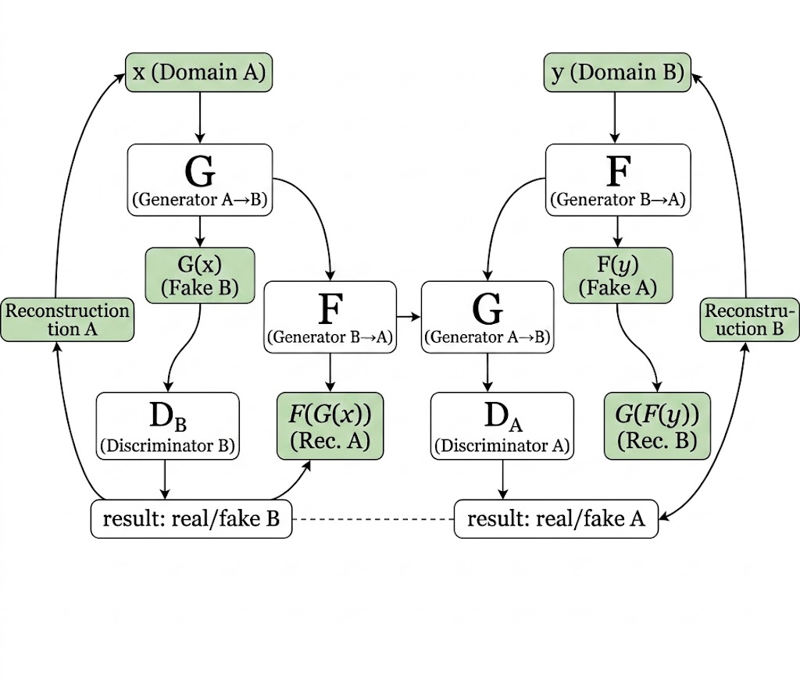
4. StyleGAN
The Upgrade: The photorealistic DNA splicer.
Developed by NVIDIA, StyleGAN separates an image into different levels of "Style." It controls coarse details (pose), medium details (hair), and fine details (pores) independently. This allows for hyper-realistic image generation where you can tweak the skin texture without changing the person's face shape.
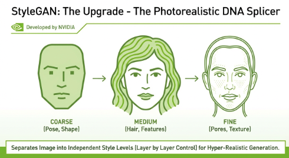
5. WGAN (Wasserstein GAN)
The Upgrade: A fairer scoring system for the Detective.
WGAN changed the Loss Function to the "Earth Mover's Distance." Instead of a simple "Real or Fake" binary, the Discriminator provides a continuous score of how far the fake image is from being real. This provides a smoother mathematical slope for the Generator to climb, nearly eliminating the problem of Mode Collapse.

Summary Quick-Reference
| GAN Type | Best Used For... |
|---|---|
| Standard GAN | Basic generation, theoretical learning. |
| CGAN | Targeted generation (e.g., Super-Resolution, text-to-image). |
| DCGAN | Standard baseline for any 2D image task. |
| CycleGAN | Changing the style of an image/video without paired data. |
| StyleGAN | Generating ultra-high-resolution, photorealistic images. |
| WGAN | Stabilizing training when your standard GAN keeps collapsing. |
The Math of GANs: The Minimax Game
To make a computer actually play the game of Counterfeiter vs. Detective, we have to translate their rivalry into a single mathematical equation.
In game theory, this is called a Minimax Game. The Discriminator (\(D\)) is trying to maximize the score (catch all the fakes), while the Generator (\(G\)) is trying to minimize the exact same score (slip the fakes past the detective).
The Objective Function
The core equation driving a standard GAN is a specialized version of Binary Cross-Entropy Loss. It looks intimidating at first glance, but it is actually a beautifully simple, two-part story:
Breaking Down the Variables
- \(x\): A piece of Real data (a true photograph).
- \(z\): Random Noise (the raw material the Generator uses to paint).
- \(G(z)\): The Fake data created by the Generator.
- \(D(\cdot)\): The Discriminator's guess. It outputs a number between 0 (Fake) and 1 (Real).
Part 1: The Detective Looks at Real Money
$$ \mathbb{E}_{x \sim p_{data}(x)}[\log D(x)] $$
This is the mathematical expectation (\(\mathbb{E}\)) when the Discriminator looks at real data (\(x\)). The Discriminator wants \( D(x)\) to be as close to 1 as possible. If \(D(x) = 1\), then \(\log(1) = 0\). If the Detective gets it wrong and guesses 0, \(\log(0)\) plummets toward negative infinity, severely penalizing the network.
Part 2: The Detective Looks at Fake Money
$$ \mathbb{E}_{z \sim p_z(z)}[\log(1 - D(G(z)))] $$
Here, the Generator makes a fake image \((G(z))\), and hands it to the Discriminator, which guesses \((D(G(z)))\).
- The Discriminator's Goal (\(\max_D\)): It wants to spot the fake, meaning it wants \((D(G(z)))\) to be 0. If it succeeds, \((1 - 0) = 1\), and \(\log(1) = 0\) (a perfect score).
- The Generator's Goal (\(\min_G\)): It wants to fool the Detective into guessing 1. If it succeeds, \((1 - 1) = 0\), driving the equation to negative infinity (which is a "win" for the Generator minimizing the function).
How does this change for a Conditional GAN (CGAN)?
The math is actually identical! The only difference is that we condition the probabilities on our label \(y\). We simply rewrite the functions to include the condition: \(D(x)\) becomes \(D(x|y)\), and \(G(z)\) becomes \(G(z|y)\).
�� Case Study: The "Digit Maker" (MNIST)
Training a Conditional GAN on handwritten digits (0-9) allows us to move from random generation to on-demand creation.
[0,0,0,0,0,0,0,1,0,0]
How the Loss Function "Corrects" the AI:
| 1. The Mistake | Generator takes the label for 7 but accidentally draws a 3. |
| 2. The Mismatch | Discriminator sees [Image: 3] paired with [Label: 7]. |
| 3. The Penalty | Low Score! The Generator is punished for the lack of correspondence. |
The GAN Duel: Balancing the Scales
Q1: If the goal is to fool the Discriminator, why is it bad if the Discriminator becomes "too weak" or "too stupid"?
Q2: What is "Mode Collapse," and why is it considered the biggest nightmare for GAN developers?
Q3: In my oceanography research, could I use a GAN to create "fake" storm data to help train other models?
18. Physics-Informed Neural Networks (PINNs)
The Mechanic vs. The Engineer
A Standard AI Model is like a mechanic who has worked on 10,000 cars but has never read a physics textbook. Through sheer experience (data), he knows that if he turns a specific bolt, the engine usually starts. However, he doesn't understand why. If you hand him a futuristic hydrogen engine he’s never seen before, he will likely fail because he lacks the underlying theory.
A PINN is like an engineer who knows the laws of thermodynamics. Even if she has never seen a specific engine before, she can use the laws of physics to predict how it will behave. She doesn't just rely on "what happened last time"; she relies on "what must happen" according to the laws of nature.
Standard AI: "I’ve seen this pattern before, so I predict X."
PINN: "I see the pattern, but the Laws of Gravity say the answer must be Y."
How It Works: Constraining the "Black Box"
Standard models are often criticized for being "black boxes" that make wild guesses when data is thin. A PINN fixes this by modifying the Loss Function. Instead of just checking if the answer matches the training data, we add a "Physics Penalty."
Total Loss = Data Error + Physics Violation
$$\mathcal{L}_{total} = \mathcal{L}_{data} + \mathcal{L}_{physics}$$
Why Scientists Prefer PINNs
- Scientific Regularization: In the real world, data is often "noisy" or missing. Physics acts as a guide rail, preventing the AI from hallucinating impossible solutions (like water flowing uphill).
- Mesh-Free Solutions: Traditional simulations require dividing space into a "mesh" or grid. PINNs use Automatic Differentiation to calculate gradients at any point in space-time, making them completely continuous.
- Discovery: You can use a PINN to find "hidden" variables. For example, if you have flow data but don't know the viscosity of the fluid, the PINN can figure it out by working the physics equations backward.
The Bottom Line
By embedding the Navier-Stokes or Schrödinger equations directly into the learning process, we turn the AI from a simple pattern-matcher into a true scientific calculator.To understand how a PINN works, we have to look at how it "calculates its mistakes." In a standard model, the computer only cares about matching the labels. In a PINN, the computer also cares about obeying the laws of nature.
Let’s use the example of Steady-State Heat Flow in a 1-meter metal rod. You know the temperature at the ends, but you have no sensors in the middle.
1. The Setup
- The Input (\(x\)): Position along the rod (from 0 to 1).
- The Output (\(T\)): The predicted temperature at that position.
- The Physics: In a steady state, heat distribution is "linear." Mathematically, the second derivative (the curviness) must be zero: $$\frac{d^2T}{dx^2} = 0$$
2. The Loss Function (The "Dual Penalty")
The PINN is trained by minimizing two types of errors at the same time:
Part A: Data Loss (\(\mathcal{L}_{data}\))
This is the standard error. We anchor the model to the two points we actually know: the left end is 100°C and the right end is 20°C.
Goal: Make sure the AI stays anchored to the known boundaries.
Part B: Physics Loss (\(\mathcal{L}_{physics}\))
This is where the "Theory" comes in. We pick random points in the middle of the rod—where we have zero data—and ask the AI to predict the temperature. We then calculate the second derivative of the AI's prediction.
Goal: If the AI tries to draw a "wiggly" line or a sharp jump in the middle, this value skyrockets. The AI is "punished" for breaking the laws of heat flow.
3. Why this is brilliant
Imagine you only have those two sensor points at the very ends of the rod.
- A Standard AI might predict 100°C at one end and 20°C at the other, but because it has no data for the middle, it might predict 0°C for the rest of the rod. It "matches the data" but the result is a physical impossibility.
- A PINN looks at that "jump" from 100°C to 0°C and realizes the curviness at that point is infinite. The Physics Loss explodes, forcing the AI to smooth out the line.